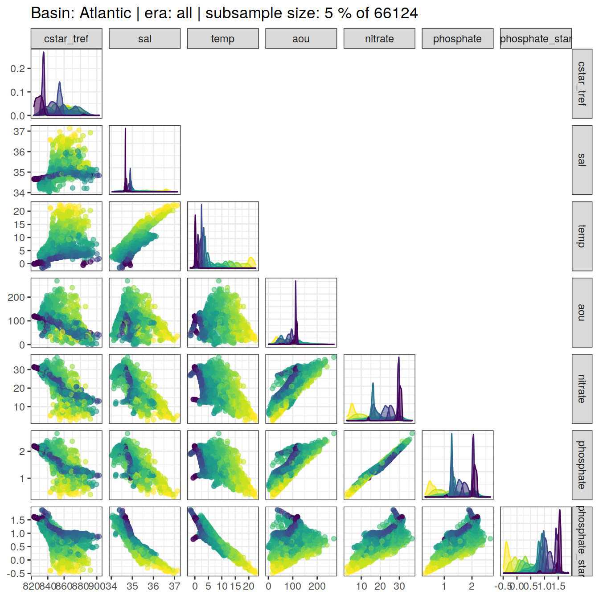

eMLR - assumption testing
Jens Daniel Müller
11 January, 2021
Last updated: 2021-01-11
Checks: 7 0
Knit directory: emlr_mod_v_XXX/
This reproducible R Markdown analysis was created with workflowr (version 1.6.2). The Checks tab describes the reproducibility checks that were applied when the results were created. The Past versions tab lists the development history.
Great! Since the R Markdown file has been committed to the Git repository, you know the exact version of the code that produced these results.
Great job! The global environment was empty. Objects defined in the global environment can affect the analysis in your R Markdown file in unknown ways. For reproduciblity it’s best to always run the code in an empty environment.
The command set.seed(20200707) was run prior to running the code in the R Markdown file. Setting a seed ensures that any results that rely on randomness, e.g. subsampling or permutations, are reproducible.
Great job! Recording the operating system, R version, and package versions is critical for reproducibility.
Nice! There were no cached chunks for this analysis, so you can be confident that you successfully produced the results during this run.
Great job! Using relative paths to the files within your workflowr project makes it easier to run your code on other machines.
Great! You are using Git for version control. Tracking code development and connecting the code version to the results is critical for reproducibility.
The results in this page were generated with repository version ac37e34. See the Past versions tab to see a history of the changes made to the R Markdown and HTML files.
Note that you need to be careful to ensure that all relevant files for the analysis have been committed to Git prior to generating the results (you can use wflow_publish or wflow_git_commit). workflowr only checks the R Markdown file, but you know if there are other scripts or data files that it depends on. Below is the status of the Git repository when the results were generated:
Ignored files:
Ignored: .Rhistory
Ignored: .Rproj.user/
Note that any generated files, e.g. HTML, png, CSS, etc., are not included in this status report because it is ok for generated content to have uncommitted changes.
These are the previous versions of the repository in which changes were made to the R Markdown (analysis/eMLR_assumption_testing.Rmd) and HTML (docs/eMLR_assumption_testing.html) files. If you’ve configured a remote Git repository (see ?wflow_git_remote), click on the hyperlinks in the table below to view the files as they were in that past version.
| File | Version | Author | Date | Message |
|---|---|---|---|---|
| Rmd | 52eff18 | Donghe-Zhu | 2021-01-09 | Implemet model_run and subsetting |
| html | 7cdea0c | jens-daniel-mueller | 2021-01-06 | Build site. |
| html | fa85b93 | jens-daniel-mueller | 2021-01-06 | Build site. |
| html | e5cb81a | Donghe-Zhu | 2021-01-05 | Build site. |
| html | a499f10 | Donghe-Zhu | 2021-01-05 | Build site. |
| Rmd | 715bdb4 | Donghe-Zhu | 2021-01-02 | model modification |
| html | fb8a752 | Donghe-Zhu | 2020-12-23 | Build site. |
| Rmd | 82e3c9c | Donghe-Zhu | 2020-12-23 | first build after creating model template |
| html | 8fae0b2 | Donghe-Zhu | 2020-12-21 | Build site. |
| html | c8b76b3 | jens-daniel-mueller | 2020-12-19 | Build site. |
| Rmd | b5fedce | jens-daniel-mueller | 2020-12-19 | first build after creating model template |
| Rmd | 8e8abf5 | Jens Müller | 2020-12-18 | Initial commit |
1 Required data
Required are:
- cleaned and prepared GLODAP-based synthetic cmorized model subsetting file
GLODAP <-
read_csv(paste(path_version_data,
"GLODAPv2.2020_MLR_fitting_ready.csv",
sep = ""))2 Predictor correlation
The correlation between:
- pairs of seven potential predictor variables and
- C* and seven potential predictor variables
were investigated based on:
- property-property plots and
- calculated correlation coefficients.
2.1 Correlation plots
For an overview, a random subset of data from all eras was plotted separately for both basins, with color indicating neutral density slabs (high density = dark-purple color).
for (i_basin in unique(GLODAP$basin)) {
# i_basin <- unique(GLODAP$basin)[1]
print(
GLODAP %>%
filter(basin == i_basin) %>%
sample_frac(0.05) %>%
ggpairs(columns = c(params_local$MLR_target,
params_local$MLR_predictors),
upper = "blank",
ggplot2::aes(col = gamma_slab, fill = gamma_slab, alpha = 0.01)) +
scale_fill_viridis_d(direction = -1) +
scale_color_viridis_d(direction = -1) +
labs(title = paste("Basin:", i_basin ,"| era: all | subsample size: 5 % of",
nrow(GLODAP %>% filter(basin == i_basin))))
)
}

Individual correlation plots for each basin, era and neutral density (gamma) slab are available at:
/nfs/kryo/work/jenmueller/emlr_cant/model/v_XXX/figures/Observations_correlation/
if (params_local$plot_all_figures == "y") {
for (i_basin in unique(GLODAP$basin)) {
for (i_era in unique(GLODAP$era)) {
# i_basin <- unique(GLODAP$basin)[1]
# i_era <- unique(GLODAP$era)[1]
GLODAP_basin_era <- GLODAP %>%
filter(basin == i_basin,
era == i_era)
for (i_gamma_slab in unique(GLODAP_basin_era$gamma_slab)) {
# i_gamma_slab <- unique(GLODAP_basin_era$gamma_slab)[5]
GLODAP_highlight <- GLODAP_basin_era %>%
mutate(gamma_highlight = if_else(gamma_slab == i_gamma_slab,
"in", "out")) %>%
arrange(desc(gamma_highlight))
p <- GLODAP_highlight %>%
ggpairs(
columns = c(params_local$MLR_target,
params_local$MLR_predictors),
ggplot2::aes(
col = gamma_highlight,
fill = gamma_highlight,
alpha = 0.01
)
) +
scale_fill_manual(values = c("red", "grey")) +
scale_color_manual(values = c("red", "grey")) +
labs(
title = paste(
i_era,
"|",
i_basin,
"| Gamma slab",
i_gamma_slab,
"| # obs total",
nrow(GLODAP_basin_era),
"| # obs slab",
nrow(GLODAP_highlight %>%
filter(gamma_highlight == "in"))
)
)
png(
filename = paste(
path_version_figures,
"Observations_correlation/",
paste(
"Predictor_correlation",
i_era,
i_basin,
i_gamma_slab,
".png",
sep = "_"
),
sep = ""),
width = 12,
height = 12,
units = "in",
res = 300
)
print(p)
dev.off()
}
}
}
}2.2 Correlation assessment
2.2.1 Calculation of correlation coeffcients
Correlation coefficients were calculated individually within each slabs, era and basin.
for (i_basin in unique(GLODAP$basin)) {
for (i_era in unique(GLODAP$era)) {
# i_basin <- unique(GLODAP$basin)[1]
# i_era <- unique(GLODAP$era)[1]
GLODAP_basin_era <- GLODAP %>%
filter(basin == i_basin,
era == i_era) %>%
select(basin,
era,
gamma_slab,
params_local$MLR_target,
params_local$MLR_predictors)
for (i_gamma_slab in unique(GLODAP_basin_era$gamma_slab)) {
# i_gamma_slab <- unique(GLODAP_basin_era$gamma_slab)[5]
print(i_gamma_slab)
GLODAP_basin_era_slab <- GLODAP_basin_era %>%
filter(gamma_slab == i_gamma_slab)
# calculate correlation table
cor_target_predictor_temp <- GLODAP_basin_era_slab %>%
select(-c(basin, era, gamma_slab)) %>%
correlate() %>%
focus(params_local$MLR_target) %>%
mutate(basin = i_basin,
era = i_era,
gamma_slab = i_gamma_slab)
if (exists("cor_target_predictor")) {
cor_target_predictor <-
bind_rows(cor_target_predictor, cor_target_predictor_temp)
}
if (!exists("cor_target_predictor")) {
cor_target_predictor <- cor_target_predictor_temp
}
cor_predictors_temp <- GLODAP_basin_era_slab %>%
select(-c(basin, era, gamma_slab)) %>%
correlate() %>%
shave %>%
stretch() %>%
filter(!is.na(r),
x != params_local$MLR_target,
y != params_local$MLR_target) %>%
mutate(pair = paste(x, y, sep = " + ")) %>%
select(-c(x, y)) %>%
mutate(basin = i_basin,
era = i_era,
gamma_slab = i_gamma_slab)
if (exists("cor_predictors")) {
cor_predictors <- bind_rows(cor_predictors, cor_predictors_temp)
}
if (!exists("cor_predictors")) {
cor_predictors <- cor_predictors_temp
}
}
}
}
rm(cor_predictors_temp, cor_target_predictor_temp,
i_gamma_slab, i_era, i_basin,
GLODAP_basin_era, GLODAP_basin_era_slab)2.2.2 Predictor pairs
Below, the range of correlations coefficients for each predictor pair is plotted per basin (facet) and density slab (color). Note that the range indicates the min and max values of in total 3 calculated coefficients (one per era).
# calculate min, max, mean across all eras
cor_predictors_stats <- cor_predictors %>%
group_by(pair, basin, gamma_slab) %>%
summarise(mean_r = mean(r),
min_r = min(r),
max_r = max(r)) %>%
ungroup()
# plot figure
cor_predictors_stats %>%
mutate(pair = reorder(pair, mean_r)) %>%
ggplot() +
geom_vline(xintercept = c(-0.9, 0.9), col = "red") +
geom_vline(xintercept = 0) +
geom_linerange(
aes(y = pair, xmin = min_r, xmax = max_r, col = gamma_slab),
position = position_dodge(width = 0.6)) +
facet_wrap(~basin) +
scale_color_viridis_d(direction = -1) +
labs(x = "correlation coefficient", y = "") +
theme(legend.position = "top")
# print table
kable(cor_predictors_stats) %>%
add_header_above() %>%
kable_styling() %>%
scroll_box(width = "100%", height = "400px")| pair | basin | gamma_slab | mean_r | min_r | max_r |
|---|---|---|---|---|---|
| aou + oxygen | Atlantic | (-Inf,26] | -0.9388553 | -0.9655062 | -0.8963458 |
| aou + oxygen | Atlantic | (26,26.5] | -0.9318977 | -0.9649481 | -0.9071321 |
| aou + oxygen | Atlantic | (26.5,26.75] | -0.9753505 | -0.9803413 | -0.9673125 |
| aou + oxygen | Atlantic | (26.75,27] | -0.9823427 | -0.9891987 | -0.9765771 |
| aou + oxygen | Atlantic | (27,27.25] | -0.9837096 | -0.9914804 | -0.9761620 |
| aou + oxygen | Atlantic | (27.25,27.5] | -0.9723583 | -0.9817307 | -0.9633555 |
| aou + oxygen | Atlantic | (27.5,27.75] | -0.9371213 | -0.9510418 | -0.9154772 |
| aou + oxygen | Atlantic | (27.75,27.85] | -0.9114344 | -0.9215426 | -0.9047438 |
| aou + oxygen | Atlantic | (27.85,27.95] | -0.8962542 | -0.9340554 | -0.8702777 |
| aou + oxygen | Atlantic | (27.95,28.05] | -0.9162059 | -0.9198468 | -0.9115150 |
| aou + oxygen | Atlantic | (28.05,28.1] | -0.9085801 | -0.9414219 | -0.8629099 |
| aou + oxygen | Atlantic | (28.1,28.15] | -0.8967655 | -0.9383821 | -0.8507185 |
| aou + oxygen | Atlantic | (28.15,28.2] | -0.9766343 | -0.9909435 | -0.9631963 |
| aou + oxygen | Atlantic | (28.2, Inf] | -0.9567781 | -0.9770163 | -0.9310909 |
| aou + oxygen | Indo-Pacific | (-Inf,26] | -0.9565360 | -0.9655596 | -0.9403217 |
| aou + oxygen | Indo-Pacific | (26,26.5] | -0.9748741 | -0.9762142 | -0.9737481 |
| aou + oxygen | Indo-Pacific | (26.5,26.75] | -0.9832033 | -0.9844034 | -0.9821262 |
| aou + oxygen | Indo-Pacific | (26.75,27] | -0.9847104 | -0.9891895 | -0.9808996 |
| aou + oxygen | Indo-Pacific | (27,27.25] | -0.9871922 | -0.9910933 | -0.9819001 |
| aou + oxygen | Indo-Pacific | (27.25,27.5] | -0.9927794 | -0.9953369 | -0.9887620 |
| aou + oxygen | Indo-Pacific | (27.5,27.75] | -0.9932332 | -0.9952173 | -0.9907215 |
| aou + oxygen | Indo-Pacific | (27.75,27.85] | -0.9957407 | -0.9982733 | -0.9916716 |
| aou + oxygen | Indo-Pacific | (27.85,27.95] | -0.9964016 | -0.9985202 | -0.9937487 |
| aou + oxygen | Indo-Pacific | (27.95,28.05] | -0.9961439 | -0.9984407 | -0.9934068 |
| aou + oxygen | Indo-Pacific | (28.05,28.1] | -0.9950490 | -0.9973785 | -0.9907841 |
| aou + oxygen | Indo-Pacific | (28.1, Inf] | -0.9960076 | -0.9972895 | -0.9942423 |
| aou + phosphate | Atlantic | (-Inf,26] | 0.9071356 | 0.8546252 | 0.9697287 |
| aou + phosphate | Atlantic | (26,26.5] | 0.8964132 | 0.8644607 | 0.9380731 |
| aou + phosphate | Atlantic | (26.5,26.75] | 0.9165792 | 0.8870827 | 0.9487254 |
| aou + phosphate | Atlantic | (26.75,27] | 0.8567206 | 0.8263012 | 0.8968422 |
| aou + phosphate | Atlantic | (27,27.25] | 0.7920470 | 0.7086792 | 0.8516981 |
| aou + phosphate | Atlantic | (27.25,27.5] | 0.6926488 | 0.5901053 | 0.7589045 |
| aou + phosphate | Atlantic | (27.5,27.75] | 0.7099259 | 0.5661723 | 0.8321696 |
| aou + phosphate | Atlantic | (27.75,27.85] | 0.8021948 | 0.7468285 | 0.8738453 |
| aou + phosphate | Atlantic | (27.85,27.95] | 0.7962029 | 0.7539910 | 0.8304174 |
| aou + phosphate | Atlantic | (27.95,28.05] | 0.8627432 | 0.8448235 | 0.8984316 |
| aou + phosphate | Atlantic | (28.05,28.1] | 0.8834356 | 0.8487456 | 0.9198913 |
| aou + phosphate | Atlantic | (28.1,28.15] | 0.9279533 | 0.8942266 | 0.9487546 |
| aou + phosphate | Atlantic | (28.15,28.2] | 0.9867253 | 0.9758388 | 0.9971056 |
| aou + phosphate | Atlantic | (28.2, Inf] | 0.9334613 | 0.8723062 | 0.9745934 |
| aou + phosphate | Indo-Pacific | (-Inf,26] | 0.9640889 | 0.9595241 | 0.9731649 |
| aou + phosphate | Indo-Pacific | (26,26.5] | 0.9572611 | 0.9446759 | 0.9643861 |
| aou + phosphate | Indo-Pacific | (26.5,26.75] | 0.9690972 | 0.9553693 | 0.9773914 |
| aou + phosphate | Indo-Pacific | (26.75,27] | 0.9582660 | 0.9390037 | 0.9720260 |
| aou + phosphate | Indo-Pacific | (27,27.25] | 0.9559435 | 0.9404125 | 0.9668350 |
| aou + phosphate | Indo-Pacific | (27.25,27.5] | 0.9639787 | 0.9581382 | 0.9740941 |
| aou + phosphate | Indo-Pacific | (27.5,27.75] | 0.9300697 | 0.8732713 | 0.9720224 |
| aou + phosphate | Indo-Pacific | (27.75,27.85] | 0.9889025 | 0.9793821 | 0.9955897 |
| aou + phosphate | Indo-Pacific | (27.85,27.95] | 0.9905844 | 0.9869137 | 0.9957781 |
| aou + phosphate | Indo-Pacific | (27.95,28.05] | 0.9871742 | 0.9823130 | 0.9931948 |
| aou + phosphate | Indo-Pacific | (28.05,28.1] | 0.9762850 | 0.9571230 | 0.9892115 |
| aou + phosphate | Indo-Pacific | (28.1, Inf] | 0.9383411 | 0.9162126 | 0.9535435 |
| aou + phosphate_star | Atlantic | (-Inf,26] | 0.5402153 | 0.3600386 | 0.7419288 |
| aou + phosphate_star | Atlantic | (26,26.5] | 0.5436850 | 0.4342922 | 0.7615409 |
| aou + phosphate_star | Atlantic | (26.5,26.75] | 0.3015014 | 0.0697593 | 0.6270630 |
| aou + phosphate_star | Atlantic | (26.75,27] | -0.1039233 | -0.2097381 | -0.0309174 |
| aou + phosphate_star | Atlantic | (27,27.25] | -0.1765106 | -0.2053029 | -0.1578668 |
| aou + phosphate_star | Atlantic | (27.25,27.5] | -0.0733484 | -0.1778875 | 0.0457708 |
| aou + phosphate_star | Atlantic | (27.5,27.75] | 0.2136742 | 0.0295216 | 0.4280105 |
| aou + phosphate_star | Atlantic | (27.75,27.85] | 0.4088499 | 0.3282038 | 0.4810733 |
| aou + phosphate_star | Atlantic | (27.85,27.95] | 0.4726696 | 0.4490740 | 0.5194445 |
| aou + phosphate_star | Atlantic | (27.95,28.05] | 0.5832072 | 0.4652315 | 0.7042791 |
| aou + phosphate_star | Atlantic | (28.05,28.1] | 0.6596962 | 0.5668394 | 0.7312430 |
| aou + phosphate_star | Atlantic | (28.1,28.15] | 0.7750104 | 0.6762645 | 0.8277531 |
| aou + phosphate_star | Atlantic | (28.15,28.2] | 0.9620098 | 0.9287579 | 0.9923932 |
| aou + phosphate_star | Atlantic | (28.2, Inf] | 0.8603010 | 0.7018811 | 0.9557589 |
| aou + phosphate_star | Indo-Pacific | (-Inf,26] | 0.6719927 | 0.5532948 | 0.7844788 |
| aou + phosphate_star | Indo-Pacific | (26,26.5] | 0.5031261 | 0.3141184 | 0.6397943 |
| aou + phosphate_star | Indo-Pacific | (26.5,26.75] | 0.5023150 | 0.3434247 | 0.6796795 |
| aou + phosphate_star | Indo-Pacific | (26.75,27] | 0.3248944 | 0.1308273 | 0.4698826 |
| aou + phosphate_star | Indo-Pacific | (27,27.25] | -0.0422127 | -0.1321921 | 0.0058080 |
| aou + phosphate_star | Indo-Pacific | (27.25,27.5] | -0.1408437 | -0.1545080 | -0.1214270 |
| aou + phosphate_star | Indo-Pacific | (27.5,27.75] | 0.0406048 | -0.0784405 | 0.2492230 |
| aou + phosphate_star | Indo-Pacific | (27.75,27.85] | -0.1035216 | -0.2240462 | 0.0403796 |
| aou + phosphate_star | Indo-Pacific | (27.85,27.95] | -0.0907712 | -0.1469733 | 0.0205338 |
| aou + phosphate_star | Indo-Pacific | (27.95,28.05] | -0.1439907 | -0.2384753 | -0.0112072 |
| aou + phosphate_star | Indo-Pacific | (28.05,28.1] | -0.2681926 | -0.3381157 | -0.1995591 |
| aou + phosphate_star | Indo-Pacific | (28.1, Inf] | -0.7257394 | -0.7690423 | -0.6561035 |
| aou + silicate | Atlantic | (-Inf,26] | 0.2069187 | -0.0903329 | 0.4589581 |
| aou + silicate | Atlantic | (26,26.5] | 0.4848497 | 0.4416264 | 0.5291471 |
| aou + silicate | Atlantic | (26.5,26.75] | 0.6145836 | 0.4424062 | 0.8226555 |
| aou + silicate | Atlantic | (26.75,27] | 0.3840313 | 0.2764858 | 0.5268125 |
| aou + silicate | Atlantic | (27,27.25] | 0.2791968 | 0.2197065 | 0.3241619 |
| aou + silicate | Atlantic | (27.25,27.5] | 0.2112569 | 0.1146107 | 0.2781720 |
| aou + silicate | Atlantic | (27.5,27.75] | 0.3328744 | 0.1799129 | 0.5455699 |
| aou + silicate | Atlantic | (27.75,27.85] | 0.5303739 | 0.4668504 | 0.6391794 |
| aou + silicate | Atlantic | (27.85,27.95] | 0.5977270 | 0.5780093 | 0.6169522 |
| aou + silicate | Atlantic | (27.95,28.05] | 0.7037641 | 0.6165439 | 0.8070825 |
| aou + silicate | Atlantic | (28.05,28.1] | 0.8124294 | 0.7387023 | 0.8700239 |
| aou + silicate | Atlantic | (28.1,28.15] | 0.8620485 | 0.7826047 | 0.9150364 |
| aou + silicate | Atlantic | (28.15,28.2] | 0.9304074 | 0.9162410 | 0.9483367 |
| aou + silicate | Atlantic | (28.2, Inf] | 0.8517625 | 0.7934626 | 0.8947136 |
| aou + silicate | Indo-Pacific | (-Inf,26] | 0.8556565 | 0.8115280 | 0.9085307 |
| aou + silicate | Indo-Pacific | (26,26.5] | 0.7818121 | 0.7153316 | 0.8301278 |
| aou + silicate | Indo-Pacific | (26.5,26.75] | 0.7943543 | 0.7567518 | 0.8568900 |
| aou + silicate | Indo-Pacific | (26.75,27] | 0.8590919 | 0.8079689 | 0.8947690 |
| aou + silicate | Indo-Pacific | (27,27.25] | 0.8738665 | 0.8174852 | 0.9061462 |
| aou + silicate | Indo-Pacific | (27.25,27.5] | 0.9087084 | 0.8713041 | 0.9349381 |
| aou + silicate | Indo-Pacific | (27.5,27.75] | 0.8881683 | 0.8481066 | 0.9159770 |
| aou + silicate | Indo-Pacific | (27.75,27.85] | 0.9624859 | 0.9501808 | 0.9735482 |
| aou + silicate | Indo-Pacific | (27.85,27.95] | 0.9543701 | 0.9372495 | 0.9637100 |
| aou + silicate | Indo-Pacific | (27.95,28.05] | 0.8836822 | 0.8434401 | 0.9042201 |
| aou + silicate | Indo-Pacific | (28.05,28.1] | 0.8081310 | 0.6884305 | 0.8876341 |
| aou + silicate | Indo-Pacific | (28.1, Inf] | 0.8281423 | 0.7426899 | 0.8759827 |
| oxygen + phosphate | Atlantic | (-Inf,26] | -0.7346368 | -0.8960758 | -0.5735788 |
| oxygen + phosphate | Atlantic | (26,26.5] | -0.7010319 | -0.8378492 | -0.6014883 |
| oxygen + phosphate | Atlantic | (26.5,26.75] | -0.8181547 | -0.8742328 | -0.7548910 |
| oxygen + phosphate | Atlantic | (26.75,27] | -0.7604439 | -0.8372288 | -0.7024423 |
| oxygen + phosphate | Atlantic | (27,27.25] | -0.6943866 | -0.7954130 | -0.5713528 |
| oxygen + phosphate | Atlantic | (27.25,27.5] | -0.5369432 | -0.6470090 | -0.3950432 |
| oxygen + phosphate | Atlantic | (27.5,27.75] | -0.4851920 | -0.6559866 | -0.2528187 |
| oxygen + phosphate | Atlantic | (27.75,27.85] | -0.5480218 | -0.6795936 | -0.4552384 |
| oxygen + phosphate | Atlantic | (27.85,27.95] | -0.5054063 | -0.6236616 | -0.3853593 |
| oxygen + phosphate | Atlantic | (27.95,28.05] | -0.6166533 | -0.6609363 | -0.5833826 |
| oxygen + phosphate | Atlantic | (28.05,28.1] | -0.6296181 | -0.7476123 | -0.4833539 |
| oxygen + phosphate | Atlantic | (28.1,28.15] | -0.6894325 | -0.8001104 | -0.5453544 |
| oxygen + phosphate | Atlantic | (28.15,28.2] | -0.9403639 | -0.9856333 | -0.8936285 |
| oxygen + phosphate | Atlantic | (28.2, Inf] | -0.8444540 | -0.9275891 | -0.7539482 |
| oxygen + phosphate | Indo-Pacific | (-Inf,26] | -0.8673135 | -0.8940499 | -0.8319746 |
| oxygen + phosphate | Indo-Pacific | (26,26.5] | -0.8796941 | -0.8937069 | -0.8589599 |
| oxygen + phosphate | Indo-Pacific | (26.5,26.75] | -0.9141096 | -0.9297791 | -0.8907663 |
| oxygen + phosphate | Indo-Pacific | (26.75,27] | -0.9013971 | -0.9356901 | -0.8611920 |
| oxygen + phosphate | Indo-Pacific | (27,27.25] | -0.9050697 | -0.9331952 | -0.8673867 |
| oxygen + phosphate | Indo-Pacific | (27.25,27.5] | -0.9331606 | -0.9492200 | -0.9089358 |
| oxygen + phosphate | Indo-Pacific | (27.5,27.75] | -0.9129776 | -0.9336371 | -0.8718310 |
| oxygen + phosphate | Indo-Pacific | (27.75,27.85] | -0.9726569 | -0.9898248 | -0.9470771 |
| oxygen + phosphate | Indo-Pacific | (27.85,27.95] | -0.9773502 | -0.9906346 | -0.9649405 |
| oxygen + phosphate | Indo-Pacific | (27.95,28.05] | -0.9728023 | -0.9876592 | -0.9583453 |
| oxygen + phosphate | Indo-Pacific | (28.05,28.1] | -0.9573197 | -0.9832026 | -0.9156985 |
| oxygen + phosphate | Indo-Pacific | (28.1, Inf] | -0.9323224 | -0.9578595 | -0.8964878 |
| oxygen + phosphate_star | Atlantic | (-Inf,26] | -0.2522689 | -0.5675702 | 0.0612008 |
| oxygen + phosphate_star | Atlantic | (26,26.5] | -0.2353600 | -0.5906969 | -0.0401784 |
| oxygen + phosphate_star | Atlantic | (26.5,26.75] | -0.1059203 | -0.4670928 | 0.1168981 |
| oxygen + phosphate_star | Atlantic | (26.75,27] | 0.2684009 | 0.1566083 | 0.3812543 |
| oxygen + phosphate_star | Atlantic | (27,27.25] | 0.3224988 | 0.2688719 | 0.3842648 |
| oxygen + phosphate_star | Atlantic | (27.25,27.5] | 0.2736921 | 0.1699699 | 0.4014992 |
| oxygen + phosphate_star | Atlantic | (27.5,27.75] | 0.0793424 | -0.1589976 | 0.3251246 |
| oxygen + phosphate_star | Atlantic | (27.75,27.85] | -0.0513558 | -0.1605714 | 0.0504860 |
| oxygen + phosphate_star | Atlantic | (27.85,27.95] | -0.0881567 | -0.1448621 | 0.0047841 |
| oxygen + phosphate_star | Atlantic | (27.95,28.05] | -0.2379778 | -0.3708002 | -0.0930769 |
| oxygen + phosphate_star | Atlantic | (28.05,28.1] | -0.3100298 | -0.4720896 | -0.0876778 |
| oxygen + phosphate_star | Atlantic | (28.1,28.15] | -0.4389846 | -0.6010601 | -0.2042341 |
| oxygen + phosphate_star | Atlantic | (28.15,28.2] | -0.8924989 | -0.9736895 | -0.8070135 |
| oxygen + phosphate_star | Atlantic | (28.2, Inf] | -0.7391622 | -0.8945963 | -0.5328682 |
| oxygen + phosphate_star | Indo-Pacific | (-Inf,26] | -0.4547854 | -0.6090875 | -0.3435555 |
| oxygen + phosphate_star | Indo-Pacific | (26,26.5] | -0.3145541 | -0.4572931 | -0.1107257 |
| oxygen + phosphate_star | Indo-Pacific | (26.5,26.75] | -0.3470343 | -0.5469528 | -0.1737129 |
| oxygen + phosphate_star | Indo-Pacific | (26.75,27] | -0.1695116 | -0.3147686 | 0.0553968 |
| oxygen + phosphate_star | Indo-Pacific | (27,27.25] | 0.1861951 | 0.1111947 | 0.3074167 |
| oxygen + phosphate_star | Indo-Pacific | (27.25,27.5] | 0.2414173 | 0.1885552 | 0.2863552 |
| oxygen + phosphate_star | Indo-Pacific | (27.5,27.75] | 0.0217455 | -0.2370565 | 0.2091202 |
| oxygen + phosphate_star | Indo-Pacific | (27.75,27.85] | 0.1850289 | 0.0850832 | 0.2750217 |
| oxygen + phosphate_star | Indo-Pacific | (27.85,27.95] | 0.1660350 | 0.0863073 | 0.2181469 |
| oxygen + phosphate_star | Indo-Pacific | (27.95,28.05] | 0.2176376 | 0.1172886 | 0.2822564 |
| oxygen + phosphate_star | Indo-Pacific | (28.05,28.1] | 0.3398662 | 0.2458038 | 0.3888269 |
| oxygen + phosphate_star | Indo-Pacific | (28.1, Inf] | 0.7444228 | 0.7002347 | 0.7828869 |
| oxygen + silicate | Atlantic | (-Inf,26] | -0.2564082 | -0.6194831 | 0.1603605 |
| oxygen + silicate | Atlantic | (26,26.5] | -0.5119103 | -0.6489349 | -0.4109782 |
| oxygen + silicate | Atlantic | (26.5,26.75] | -0.4973955 | -0.7525755 | -0.3066580 |
| oxygen + silicate | Atlantic | (26.75,27] | -0.2442181 | -0.4326286 | -0.1206005 |
| oxygen + silicate | Atlantic | (27,27.25] | -0.1551411 | -0.2385671 | -0.0675693 |
| oxygen + silicate | Atlantic | (27.25,27.5] | -0.0312871 | -0.0988415 | 0.0879031 |
| oxygen + silicate | Atlantic | (27.5,27.75] | -0.0815405 | -0.3287495 | 0.1432304 |
| oxygen + silicate | Atlantic | (27.75,27.85] | -0.2346043 | -0.4052184 | -0.1482439 |
| oxygen + silicate | Atlantic | (27.85,27.95] | -0.2471899 | -0.3529827 | -0.1446483 |
| oxygen + silicate | Atlantic | (27.95,28.05] | -0.3945115 | -0.5127714 | -0.2840559 |
| oxygen + silicate | Atlantic | (28.05,28.1] | -0.5306883 | -0.6444621 | -0.3375195 |
| oxygen + silicate | Atlantic | (28.1,28.15] | -0.6077203 | -0.7502905 | -0.3853165 |
| oxygen + silicate | Atlantic | (28.15,28.2] | -0.8890285 | -0.9433354 | -0.8263659 |
| oxygen + silicate | Atlantic | (28.2, Inf] | -0.7755867 | -0.8267559 | -0.7012450 |
| oxygen + silicate | Indo-Pacific | (-Inf,26] | -0.7269544 | -0.8046591 | -0.6732288 |
| oxygen + silicate | Indo-Pacific | (26,26.5] | -0.6631060 | -0.7172681 | -0.5869154 |
| oxygen + silicate | Indo-Pacific | (26.5,26.75] | -0.6960878 | -0.7767565 | -0.6509963 |
| oxygen + silicate | Indo-Pacific | (26.75,27] | -0.7766624 | -0.8221065 | -0.6951511 |
| oxygen + silicate | Indo-Pacific | (27,27.25] | -0.8019978 | -0.8479938 | -0.7106217 |
| oxygen + silicate | Indo-Pacific | (27.25,27.5] | -0.8609379 | -0.8986782 | -0.7988370 |
| oxygen + silicate | Indo-Pacific | (27.5,27.75] | -0.8638437 | -0.8976340 | -0.8445121 |
| oxygen + silicate | Indo-Pacific | (27.75,27.85] | -0.9407047 | -0.9584782 | -0.9138289 |
| oxygen + silicate | Indo-Pacific | (27.85,27.95] | -0.9331057 | -0.9523806 | -0.9026400 |
| oxygen + silicate | Indo-Pacific | (27.95,28.05] | -0.8559886 | -0.8904475 | -0.7942897 |
| oxygen + silicate | Indo-Pacific | (28.05,28.1] | -0.7790230 | -0.8832247 | -0.6183999 |
| oxygen + silicate | Indo-Pacific | (28.1, Inf] | -0.8281702 | -0.8816787 | -0.7347022 |
| phosphate + phosphate_star | Atlantic | (-Inf,26] | 0.8325655 | 0.7825114 | 0.8740608 |
| phosphate + phosphate_star | Atlantic | (26,26.5] | 0.8511833 | 0.7957469 | 0.9353995 |
| phosphate + phosphate_star | Atlantic | (26.5,26.75] | 0.6443141 | 0.4642839 | 0.8376371 |
| phosphate + phosphate_star | Atlantic | (26.75,27] | 0.4147942 | 0.3373506 | 0.4980439 |
| phosphate + phosphate_star | Atlantic | (27,27.25] | 0.4483828 | 0.3698858 | 0.5381425 |
| phosphate + phosphate_star | Atlantic | (27.25,27.5] | 0.6578181 | 0.5768497 | 0.7138485 |
| phosphate + phosphate_star | Atlantic | (27.5,27.75] | 0.8260087 | 0.7958026 | 0.8494713 |
| phosphate + phosphate_star | Atlantic | (27.75,27.85] | 0.8605456 | 0.8331932 | 0.8821928 |
| phosphate + phosphate_star | Atlantic | (27.85,27.95] | 0.9009779 | 0.8637940 | 0.9209125 |
| phosphate + phosphate_star | Atlantic | (27.95,28.05] | 0.9089648 | 0.8629711 | 0.9420203 |
| phosphate + phosphate_star | Atlantic | (28.05,28.1] | 0.9320147 | 0.9144331 | 0.9432022 |
| phosphate + phosphate_star | Atlantic | (28.1,28.15] | 0.9519334 | 0.9319179 | 0.9635632 |
| phosphate + phosphate_star | Atlantic | (28.15,28.2] | 0.9925750 | 0.9862059 | 0.9981894 |
| phosphate + phosphate_star | Atlantic | (28.2, Inf] | 0.9828433 | 0.9576513 | 0.9967712 |
| phosphate + phosphate_star | Indo-Pacific | (-Inf,26] | 0.8340020 | 0.7540231 | 0.8998389 |
| phosphate + phosphate_star | Indo-Pacific | (26,26.5] | 0.7241734 | 0.6040032 | 0.8170077 |
| phosphate + phosphate_star | Indo-Pacific | (26.5,26.75] | 0.6938816 | 0.6022898 | 0.8167203 |
| phosphate + phosphate_star | Indo-Pacific | (26.75,27] | 0.5731035 | 0.4597920 | 0.6846834 |
| phosphate + phosphate_star | Indo-Pacific | (27,27.25] | 0.2441855 | 0.2068876 | 0.2722938 |
| phosphate + phosphate_star | Indo-Pacific | (27.25,27.5] | 0.1203823 | 0.0679964 | 0.1539527 |
| phosphate + phosphate_star | Indo-Pacific | (27.5,27.75] | 0.3692413 | 0.1555328 | 0.6825184 |
| phosphate + phosphate_star | Indo-Pacific | (27.75,27.85] | 0.0341649 | -0.1354187 | 0.2392617 |
| phosphate + phosphate_star | Indo-Pacific | (27.85,27.95] | 0.0392487 | -0.0578821 | 0.1782078 |
| phosphate + phosphate_star | Indo-Pacific | (27.95,28.05] | 0.0073457 | -0.1285227 | 0.1712379 |
| phosphate + phosphate_star | Indo-Pacific | (28.05,28.1] | -0.0707702 | -0.1659329 | 0.0183796 |
| phosphate + phosphate_star | Indo-Pacific | (28.1, Inf] | -0.4567590 | -0.5302440 | -0.3114397 |
| sal + aou | Atlantic | (-Inf,26] | -0.4897679 | -0.6110417 | -0.2761573 |
| sal + aou | Atlantic | (26,26.5] | -0.4630819 | -0.7441526 | -0.3166890 |
| sal + aou | Atlantic | (26.5,26.75] | -0.1538441 | -0.4860554 | 0.1266232 |
| sal + aou | Atlantic | (26.75,27] | 0.3321541 | 0.2800052 | 0.3783741 |
| sal + aou | Atlantic | (27,27.25] | 0.5279130 | 0.4547924 | 0.6065566 |
| sal + aou | Atlantic | (27.25,27.5] | 0.4019161 | 0.1984846 | 0.5656793 |
| sal + aou | Atlantic | (27.5,27.75] | 0.3236201 | 0.2206958 | 0.4001021 |
| sal + aou | Atlantic | (27.75,27.85] | 0.5597078 | 0.4769175 | 0.6532749 |
| sal + aou | Atlantic | (27.85,27.95] | 0.4235210 | 0.3143984 | 0.5408487 |
| sal + aou | Atlantic | (27.95,28.05] | 0.0903092 | -0.0264400 | 0.2491552 |
| sal + aou | Atlantic | (28.05,28.1] | -0.2619521 | -0.4606207 | -0.1353794 |
| sal + aou | Atlantic | (28.1,28.15] | -0.1916389 | -0.2837455 | -0.0417925 |
| sal + aou | Atlantic | (28.15,28.2] | -0.8121771 | -0.9848460 | -0.5547279 |
| sal + aou | Atlantic | (28.2, Inf] | 0.2304612 | -0.0906907 | 0.3966322 |
| sal + aou | Indo-Pacific | (-Inf,26] | -0.3151764 | -0.3889187 | -0.2025628 |
| sal + aou | Indo-Pacific | (26,26.5] | -0.2812433 | -0.5056699 | -0.0703572 |
| sal + aou | Indo-Pacific | (26.5,26.75] | -0.3252860 | -0.5980223 | -0.1637399 |
| sal + aou | Indo-Pacific | (26.75,27] | -0.3716532 | -0.5359217 | -0.1663940 |
| sal + aou | Indo-Pacific | (27,27.25] | -0.2660094 | -0.3894018 | -0.0341115 |
| sal + aou | Indo-Pacific | (27.25,27.5] | -0.1440833 | -0.3023767 | -0.0011876 |
| sal + aou | Indo-Pacific | (27.5,27.75] | 0.1971370 | 0.0727738 | 0.3578748 |
| sal + aou | Indo-Pacific | (27.75,27.85] | 0.4519297 | 0.3204291 | 0.5992468 |
| sal + aou | Indo-Pacific | (27.85,27.95] | 0.5953114 | 0.4391922 | 0.7596345 |
| sal + aou | Indo-Pacific | (27.95,28.05] | 0.6677635 | 0.5910526 | 0.7457422 |
| sal + aou | Indo-Pacific | (28.05,28.1] | 0.7087074 | 0.6200707 | 0.7859946 |
| sal + aou | Indo-Pacific | (28.1, Inf] | 0.8252763 | 0.7745568 | 0.8739137 |
| sal + oxygen | Atlantic | (-Inf,26] | 0.2590274 | -0.1398578 | 0.4770515 |
| sal + oxygen | Atlantic | (26,26.5] | 0.1446143 | -0.0908159 | 0.5636892 |
| sal + oxygen | Atlantic | (26.5,26.75] | -0.0421419 | -0.3044601 | 0.3118345 |
| sal + oxygen | Atlantic | (26.75,27] | -0.4880944 | -0.5373759 | -0.4625521 |
| sal + oxygen | Atlantic | (27,27.25] | -0.6556914 | -0.6938798 | -0.6218387 |
| sal + oxygen | Atlantic | (27.25,27.5] | -0.5807888 | -0.6897597 | -0.4092711 |
| sal + oxygen | Atlantic | (27.5,27.75] | -0.5982776 | -0.6987562 | -0.4980966 |
| sal + oxygen | Atlantic | (27.75,27.85] | -0.8185363 | -0.8782454 | -0.7707441 |
| sal + oxygen | Atlantic | (27.85,27.95] | -0.6790348 | -0.7261759 | -0.6133690 |
| sal + oxygen | Atlantic | (27.95,28.05] | -0.3381112 | -0.4983318 | -0.1958110 |
| sal + oxygen | Atlantic | (28.05,28.1] | -0.0556167 | -0.2354001 | 0.2308770 |
| sal + oxygen | Atlantic | (28.1,28.15] | -0.1525267 | -0.3800524 | -0.0201626 |
| sal + oxygen | Atlantic | (28.15,28.2] | 0.7328583 | 0.4568305 | 0.9598482 |
| sal + oxygen | Atlantic | (28.2, Inf] | -0.3158884 | -0.4703902 | -0.0685636 |
| sal + oxygen | Indo-Pacific | (-Inf,26] | 0.0952648 | -0.0202990 | 0.2087222 |
| sal + oxygen | Indo-Pacific | (26,26.5] | 0.0980077 | -0.1201141 | 0.3225388 |
| sal + oxygen | Indo-Pacific | (26.5,26.75] | 0.1724034 | 0.0039102 | 0.4647217 |
| sal + oxygen | Indo-Pacific | (26.75,27] | 0.2307635 | -0.0045825 | 0.3958666 |
| sal + oxygen | Indo-Pacific | (27,27.25] | 0.1431306 | -0.1187651 | 0.2794535 |
| sal + oxygen | Indo-Pacific | (27.25,27.5] | 0.0678553 | -0.1018794 | 0.2285035 |
| sal + oxygen | Indo-Pacific | (27.5,27.75] | -0.2369688 | -0.3937183 | -0.1124910 |
| sal + oxygen | Indo-Pacific | (27.75,27.85] | -0.4574075 | -0.5936840 | -0.3233015 |
| sal + oxygen | Indo-Pacific | (27.85,27.95] | -0.5928547 | -0.7527298 | -0.4333083 |
| sal + oxygen | Indo-Pacific | (27.95,28.05] | -0.6668804 | -0.7385035 | -0.5969610 |
| sal + oxygen | Indo-Pacific | (28.05,28.1] | -0.7036480 | -0.7868692 | -0.6086598 |
| sal + oxygen | Indo-Pacific | (28.1, Inf] | -0.8392570 | -0.8809236 | -0.8064962 |
| sal + phosphate | Atlantic | (-Inf,26] | -0.6229977 | -0.6692752 | -0.5712763 |
| sal + phosphate | Atlantic | (26,26.5] | -0.7382587 | -0.8759902 | -0.6688507 |
| sal + phosphate | Atlantic | (26.5,26.75] | -0.4924915 | -0.7112301 | -0.2542624 |
| sal + phosphate | Atlantic | (26.75,27] | -0.1534517 | -0.2597115 | -0.0649045 |
| sal + phosphate | Atlantic | (27,27.25] | 0.0179423 | -0.1618159 | 0.1795998 |
| sal + phosphate | Atlantic | (27.25,27.5] | -0.2344347 | -0.4756733 | 0.0384561 |
| sal + phosphate | Atlantic | (27.5,27.75] | -0.1551620 | -0.2393924 | -0.0731224 |
| sal + phosphate | Atlantic | (27.75,27.85] | 0.1898732 | 0.0900126 | 0.2871679 |
| sal + phosphate | Atlantic | (27.85,27.95] | 0.1722307 | 0.0517644 | 0.3334166 |
| sal + phosphate | Atlantic | (27.95,28.05] | -0.0841393 | -0.1589516 | -0.0093218 |
| sal + phosphate | Atlantic | (28.05,28.1] | -0.4812423 | -0.5826040 | -0.3643162 |
| sal + phosphate | Atlantic | (28.1,28.15] | -0.3596958 | -0.4230598 | -0.2768207 |
| sal + phosphate | Atlantic | (28.15,28.2] | -0.8249907 | -0.9768038 | -0.5709811 |
| sal + phosphate | Atlantic | (28.2, Inf] | 0.1531324 | -0.3198992 | 0.4343031 |
| sal + phosphate | Indo-Pacific | (-Inf,26] | -0.4234541 | -0.4688315 | -0.3623886 |
| sal + phosphate | Indo-Pacific | (26,26.5] | -0.4475985 | -0.6472891 | -0.3174577 |
| sal + phosphate | Indo-Pacific | (26.5,26.75] | -0.4733867 | -0.7014107 | -0.2877086 |
| sal + phosphate | Indo-Pacific | (26.75,27] | -0.5133777 | -0.6623625 | -0.4092031 |
| sal + phosphate | Indo-Pacific | (27,27.25] | -0.3814545 | -0.5011699 | -0.2377024 |
| sal + phosphate | Indo-Pacific | (27.25,27.5] | -0.1796280 | -0.3549832 | -0.0310002 |
| sal + phosphate | Indo-Pacific | (27.5,27.75] | 0.3710788 | 0.1018468 | 0.7337911 |
| sal + phosphate | Indo-Pacific | (27.75,27.85] | 0.4492691 | 0.3123118 | 0.6176046 |
| sal + phosphate | Indo-Pacific | (27.85,27.95] | 0.5946751 | 0.4515634 | 0.7578369 |
| sal + phosphate | Indo-Pacific | (27.95,28.05] | 0.6462553 | 0.5747562 | 0.7274322 |
| sal + phosphate | Indo-Pacific | (28.05,28.1] | 0.7053033 | 0.6306603 | 0.7889567 |
| sal + phosphate | Indo-Pacific | (28.1, Inf] | 0.7591932 | 0.6547369 | 0.8619845 |
| sal + phosphate_star | Atlantic | (-Inf,26] | -0.6869887 | -0.8023996 | -0.5743900 |
| sal + phosphate_star | Atlantic | (26,26.5] | -0.9185291 | -0.9296809 | -0.9025865 |
| sal + phosphate_star | Atlantic | (26.5,26.75] | -0.9359182 | -0.9444625 | -0.9248003 |
| sal + phosphate_star | Atlantic | (26.75,27] | -0.9158979 | -0.9412407 | -0.8890892 |
| sal + phosphate_star | Atlantic | (27,27.25] | -0.7965134 | -0.8206502 | -0.7782656 |
| sal + phosphate_star | Atlantic | (27.25,27.5] | -0.7951443 | -0.9183859 | -0.6901032 |
| sal + phosphate_star | Atlantic | (27.5,27.75] | -0.5672422 | -0.6338412 | -0.5195901 |
| sal + phosphate_star | Atlantic | (27.75,27.85] | -0.2719413 | -0.3172205 | -0.2216558 |
| sal + phosphate_star | Atlantic | (27.85,27.95] | -0.1383468 | -0.2385474 | -0.0460290 |
| sal + phosphate_star | Atlantic | (27.95,28.05] | -0.2863442 | -0.3398826 | -0.1977193 |
| sal + phosphate_star | Atlantic | (28.05,28.1] | -0.6161072 | -0.6741508 | -0.5209594 |
| sal + phosphate_star | Atlantic | (28.1,28.15] | -0.5168517 | -0.5482191 | -0.4877314 |
| sal + phosphate_star | Atlantic | (28.15,28.2] | -0.8342081 | -0.9760759 | -0.5949409 |
| sal + phosphate_star | Atlantic | (28.2, Inf] | 0.0984894 | -0.4421140 | 0.4183862 |
| sal + phosphate_star | Indo-Pacific | (-Inf,26] | -0.6614581 | -0.7330377 | -0.5742290 |
| sal + phosphate_star | Indo-Pacific | (26,26.5] | -0.7637179 | -0.8417974 | -0.6462313 |
| sal + phosphate_star | Indo-Pacific | (26.5,26.75] | -0.8035931 | -0.8666656 | -0.6953982 |
| sal + phosphate_star | Indo-Pacific | (26.75,27] | -0.7363169 | -0.8118444 | -0.5880713 |
| sal + phosphate_star | Indo-Pacific | (27,27.25] | -0.5483411 | -0.6880291 | -0.3690966 |
| sal + phosphate_star | Indo-Pacific | (27.25,27.5] | -0.2754492 | -0.5933407 | 0.1350536 |
| sal + phosphate_star | Indo-Pacific | (27.5,27.75] | 0.3503389 | -0.2860882 | 0.8679316 |
| sal + phosphate_star | Indo-Pacific | (27.75,27.85] | -0.0678672 | -0.2342592 | 0.0391683 |
| sal + phosphate_star | Indo-Pacific | (27.85,27.95] | -0.0386833 | -0.1471900 | 0.0895580 |
| sal + phosphate_star | Indo-Pacific | (27.95,28.05] | -0.1640668 | -0.2204378 | -0.0607625 |
| sal + phosphate_star | Indo-Pacific | (28.05,28.1] | -0.1518812 | -0.2775627 | -0.0659465 |
| sal + phosphate_star | Indo-Pacific | (28.1, Inf] | -0.6614982 | -0.6907834 | -0.6189600 |
| sal + silicate | Atlantic | (-Inf,26] | -0.3811493 | -0.5455068 | -0.2461813 |
| sal + silicate | Atlantic | (26,26.5] | -0.0263121 | -0.1000085 | 0.0893958 |
| sal + silicate | Atlantic | (26.5,26.75] | -0.4621199 | -0.5201489 | -0.4298894 |
| sal + silicate | Atlantic | (26.75,27] | -0.5745095 | -0.6412074 | -0.4429550 |
| sal + silicate | Atlantic | (27,27.25] | -0.4459831 | -0.4963304 | -0.3884368 |
| sal + silicate | Atlantic | (27.25,27.5] | -0.5854827 | -0.7951930 | -0.4138412 |
| sal + silicate | Atlantic | (27.5,27.75] | -0.3811710 | -0.4530023 | -0.3322734 |
| sal + silicate | Atlantic | (27.75,27.85] | -0.0483271 | -0.1490543 | 0.0738531 |
| sal + silicate | Atlantic | (27.85,27.95] | -0.0459149 | -0.1729916 | 0.1110164 |
| sal + silicate | Atlantic | (27.95,28.05] | -0.2249597 | -0.2787564 | -0.1881011 |
| sal + silicate | Atlantic | (28.05,28.1] | -0.4892251 | -0.6034159 | -0.3456198 |
| sal + silicate | Atlantic | (28.1,28.15] | -0.3942575 | -0.4131302 | -0.3796650 |
| sal + silicate | Atlantic | (28.15,28.2] | -0.7499800 | -0.9013316 | -0.4921985 |
| sal + silicate | Atlantic | (28.2, Inf] | 0.1864748 | -0.2339583 | 0.4197122 |
| sal + silicate | Indo-Pacific | (-Inf,26] | -0.5486076 | -0.6011188 | -0.5138254 |
| sal + silicate | Indo-Pacific | (26,26.5] | -0.5786362 | -0.7138499 | -0.4937602 |
| sal + silicate | Indo-Pacific | (26.5,26.75] | -0.6414996 | -0.7718590 | -0.5154831 |
| sal + silicate | Indo-Pacific | (26.75,27] | -0.6348406 | -0.7105786 | -0.5868966 |
| sal + silicate | Indo-Pacific | (27,27.25] | -0.4927848 | -0.5512709 | -0.4431366 |
| sal + silicate | Indo-Pacific | (27.25,27.5] | -0.3191874 | -0.4275069 | -0.1930898 |
| sal + silicate | Indo-Pacific | (27.5,27.75] | 0.2976965 | -0.0525321 | 0.7018736 |
| sal + silicate | Indo-Pacific | (27.75,27.85] | 0.4209855 | 0.1921784 | 0.6521739 |
| sal + silicate | Indo-Pacific | (27.85,27.95] | 0.5920259 | 0.3645738 | 0.8172766 |
| sal + silicate | Indo-Pacific | (27.95,28.05] | 0.7283915 | 0.5746867 | 0.8723339 |
| sal + silicate | Indo-Pacific | (28.05,28.1] | 0.7699782 | 0.5441603 | 0.9086004 |
| sal + silicate | Indo-Pacific | (28.1, Inf] | 0.8466908 | 0.7814168 | 0.9107831 |
| sal + temp | Atlantic | (-Inf,26] | 0.7499560 | 0.5357736 | 0.8923086 |
| sal + temp | Atlantic | (26,26.5] | 0.9376797 | 0.9329221 | 0.9418247 |
| sal + temp | Atlantic | (26.5,26.75] | 0.9158863 | 0.9084105 | 0.9260739 |
| sal + temp | Atlantic | (26.75,27] | 0.9314905 | 0.9229493 | 0.9419669 |
| sal + temp | Atlantic | (27,27.25] | 0.9276980 | 0.9184928 | 0.9342798 |
| sal + temp | Atlantic | (27.25,27.5] | 0.9213291 | 0.8914281 | 0.9413707 |
| sal + temp | Atlantic | (27.5,27.75] | 0.9003634 | 0.8747029 | 0.9189368 |
| sal + temp | Atlantic | (27.75,27.85] | 0.8556749 | 0.8342679 | 0.8739437 |
| sal + temp | Atlantic | (27.85,27.95] | 0.7122650 | 0.6877238 | 0.7315238 |
| sal + temp | Atlantic | (27.95,28.05] | 0.5965241 | 0.5390298 | 0.6672960 |
| sal + temp | Atlantic | (28.05,28.1] | 0.7131766 | 0.6819719 | 0.7742745 |
| sal + temp | Atlantic | (28.1,28.15] | 0.7197558 | 0.7109060 | 0.7324396 |
| sal + temp | Atlantic | (28.15,28.2] | 0.8314456 | 0.6219447 | 0.9793979 |
| sal + temp | Atlantic | (28.2, Inf] | -0.0367591 | -0.3255638 | 0.4967799 |
| sal + temp | Indo-Pacific | (-Inf,26] | 0.7506314 | 0.6894465 | 0.8219836 |
| sal + temp | Indo-Pacific | (26,26.5] | 0.8386402 | 0.7828196 | 0.8858463 |
| sal + temp | Indo-Pacific | (26.5,26.75] | 0.8741501 | 0.8298310 | 0.9078245 |
| sal + temp | Indo-Pacific | (26.75,27] | 0.8358475 | 0.7960033 | 0.8769022 |
| sal + temp | Indo-Pacific | (27,27.25] | 0.7284690 | 0.6749058 | 0.7745215 |
| sal + temp | Indo-Pacific | (27.25,27.5] | 0.5471210 | 0.4436603 | 0.6016977 |
| sal + temp | Indo-Pacific | (27.5,27.75] | 0.3327603 | 0.2435780 | 0.3875315 |
| sal + temp | Indo-Pacific | (27.75,27.85] | 0.2135796 | -0.0221241 | 0.4196557 |
| sal + temp | Indo-Pacific | (27.85,27.95] | 0.2464022 | 0.0121674 | 0.3898627 |
| sal + temp | Indo-Pacific | (27.95,28.05] | 0.3717466 | 0.3366917 | 0.4359469 |
| sal + temp | Indo-Pacific | (28.05,28.1] | 0.4499992 | 0.3524466 | 0.5622859 |
| sal + temp | Indo-Pacific | (28.1, Inf] | 0.7589365 | 0.6719614 | 0.8041743 |
| silicate + phosphate | Atlantic | (-Inf,26] | 0.0798970 | -0.1119958 | 0.1831616 |
| silicate + phosphate | Atlantic | (26,26.5] | 0.3738935 | 0.3215725 | 0.4187725 |
| silicate + phosphate | Atlantic | (26.5,26.75] | 0.7410619 | 0.6431102 | 0.8546272 |
| silicate + phosphate | Atlantic | (26.75,27] | 0.7583395 | 0.6995082 | 0.8106852 |
| silicate + phosphate | Atlantic | (27,27.25] | 0.7779008 | 0.7538767 | 0.8088234 |
| silicate + phosphate | Atlantic | (27.25,27.5] | 0.8276196 | 0.7924780 | 0.8472330 |
| silicate + phosphate | Atlantic | (27.5,27.75] | 0.8787771 | 0.8377722 | 0.9067736 |
| silicate + phosphate | Atlantic | (27.75,27.85] | 0.9106232 | 0.8858411 | 0.9269231 |
| silicate + phosphate | Atlantic | (27.85,27.95] | 0.9266304 | 0.9093290 | 0.9423558 |
| silicate + phosphate | Atlantic | (27.95,28.05] | 0.9324527 | 0.9140232 | 0.9552153 |
| silicate + phosphate | Atlantic | (28.05,28.1] | 0.9543102 | 0.9487561 | 0.9598532 |
| silicate + phosphate | Atlantic | (28.1,28.15] | 0.9552712 | 0.9382494 | 0.9670283 |
| silicate + phosphate | Atlantic | (28.15,28.2] | 0.9534895 | 0.9336416 | 0.9662628 |
| silicate + phosphate | Atlantic | (28.2, Inf] | 0.9160452 | 0.8663231 | 0.9655413 |
| silicate + phosphate | Indo-Pacific | (-Inf,26] | 0.9107971 | 0.8693876 | 0.9521471 |
| silicate + phosphate | Indo-Pacific | (26,26.5] | 0.8817531 | 0.8503062 | 0.8999029 |
| silicate + phosphate | Indo-Pacific | (26.5,26.75] | 0.8763738 | 0.8403658 | 0.9082065 |
| silicate + phosphate | Indo-Pacific | (26.75,27] | 0.9221232 | 0.9134312 | 0.9368086 |
| silicate + phosphate | Indo-Pacific | (27,27.25] | 0.9397881 | 0.9216267 | 0.9580849 |
| silicate + phosphate | Indo-Pacific | (27.25,27.5] | 0.9502924 | 0.9388336 | 0.9667707 |
| silicate + phosphate | Indo-Pacific | (27.5,27.75] | 0.9589554 | 0.9475112 | 0.9703213 |
| silicate + phosphate | Indo-Pacific | (27.75,27.85] | 0.9765534 | 0.9702489 | 0.9845327 |
| silicate + phosphate | Indo-Pacific | (27.85,27.95] | 0.9707783 | 0.9625669 | 0.9767071 |
| silicate + phosphate | Indo-Pacific | (27.95,28.05] | 0.9106675 | 0.8908778 | 0.9243926 |
| silicate + phosphate | Indo-Pacific | (28.05,28.1] | 0.8666642 | 0.8008612 | 0.9157290 |
| silicate + phosphate | Indo-Pacific | (28.1, Inf] | 0.9148605 | 0.8594178 | 0.9565678 |
| silicate + phosphate_star | Atlantic | (-Inf,26] | -0.0912367 | -0.2323229 | -0.0145756 |
| silicate + phosphate_star | Atlantic | (26,26.5] | 0.1392897 | 0.0434425 | 0.2311066 |
| silicate + phosphate_star | Atlantic | (26.5,26.75] | 0.6511096 | 0.5934228 | 0.7097557 |
| silicate + phosphate_star | Atlantic | (26.75,27] | 0.7846388 | 0.7422314 | 0.8168679 |
| silicate + phosphate_star | Atlantic | (27,27.25] | 0.8388457 | 0.8323632 | 0.8437091 |
| silicate + phosphate_star | Atlantic | (27.25,27.5] | 0.9185097 | 0.9005521 | 0.9444892 |
| silicate + phosphate_star | Atlantic | (27.5,27.75] | 0.9550502 | 0.9536140 | 0.9562865 |
| silicate + phosphate_star | Atlantic | (27.75,27.85] | 0.9445853 | 0.9311766 | 0.9565433 |
| silicate + phosphate_star | Atlantic | (27.85,27.95] | 0.9474410 | 0.9348177 | 0.9601187 |
| silicate + phosphate_star | Atlantic | (27.95,28.05] | 0.9458867 | 0.9410330 | 0.9528479 |
| silicate + phosphate_star | Atlantic | (28.05,28.1] | 0.9243338 | 0.8927837 | 0.9566711 |
| silicate + phosphate_star | Atlantic | (28.1,28.15] | 0.9316891 | 0.9004409 | 0.9550726 |
| silicate + phosphate_star | Atlantic | (28.15,28.2] | 0.9493595 | 0.9212203 | 0.9677345 |
| silicate + phosphate_star | Atlantic | (28.2, Inf] | 0.8901066 | 0.7658212 | 0.9772251 |
| silicate + phosphate_star | Indo-Pacific | (-Inf,26] | 0.8302317 | 0.7352306 | 0.9021649 |
| silicate + phosphate_star | Indo-Pacific | (26,26.5] | 0.8045689 | 0.7368852 | 0.8414145 |
| silicate + phosphate_star | Indo-Pacific | (26.5,26.75] | 0.7971412 | 0.7478972 | 0.8478326 |
| silicate + phosphate_star | Indo-Pacific | (26.75,27] | 0.6324134 | 0.5851308 | 0.6897256 |
| silicate + phosphate_star | Indo-Pacific | (27,27.25] | 0.3369197 | 0.3158401 | 0.3652271 |
| silicate + phosphate_star | Indo-Pacific | (27.25,27.5] | 0.1816187 | 0.1259883 | 0.2601324 |
| silicate + phosphate_star | Indo-Pacific | (27.5,27.75] | 0.3920456 | 0.2574143 | 0.6347580 |
| silicate + phosphate_star | Indo-Pacific | (27.75,27.85] | 0.0859795 | -0.0265126 | 0.2474837 |
| silicate + phosphate_star | Indo-Pacific | (27.85,27.95] | 0.1130559 | 0.0282512 | 0.2696846 |
| silicate + phosphate_star | Indo-Pacific | (27.95,28.05] | 0.1275553 | -0.0230232 | 0.3577266 |
| silicate + phosphate_star | Indo-Pacific | (28.05,28.1] | 0.0972532 | -0.0432620 | 0.3007057 |
| silicate + phosphate_star | Indo-Pacific | (28.1, Inf] | -0.3561852 | -0.4741406 | -0.1909710 |
| temp + aou | Atlantic | (-Inf,26] | -0.6419157 | -0.7199162 | -0.4869969 |
| temp + aou | Atlantic | (26,26.5] | -0.5890634 | -0.8371626 | -0.4473481 |
| temp + aou | Atlantic | (26.5,26.75] | -0.2469271 | -0.5228629 | -0.0124677 |
| temp + aou | Atlantic | (26.75,27] | 0.3078782 | 0.2157556 | 0.3779189 |
| temp + aou | Atlantic | (27,27.25] | 0.5224352 | 0.4571151 | 0.6469000 |
| temp + aou | Atlantic | (27.25,27.5] | 0.3920490 | 0.2883583 | 0.4693885 |
| temp + aou | Atlantic | (27.5,27.75] | 0.1620010 | -0.0324346 | 0.2711290 |
| temp + aou | Atlantic | (27.75,27.85] | 0.2228478 | 0.1617555 | 0.2804389 |
| temp + aou | Atlantic | (27.85,27.95] | 0.1537102 | 0.0634359 | 0.3188504 |
| temp + aou | Atlantic | (27.95,28.05] | -0.0538040 | -0.2633176 | 0.1697155 |
| temp + aou | Atlantic | (28.05,28.1] | -0.2818256 | -0.3962617 | -0.1493807 |
| temp + aou | Atlantic | (28.1,28.15] | -0.4381909 | -0.5654497 | -0.2553470 |
| temp + aou | Atlantic | (28.15,28.2] | -0.8906186 | -0.9632864 | -0.8028620 |
| temp + aou | Atlantic | (28.2, Inf] | -0.7993975 | -0.9748574 | -0.5260409 |
| temp + aou | Indo-Pacific | (-Inf,26] | -0.5439398 | -0.7298205 | -0.3248980 |
| temp + aou | Indo-Pacific | (26,26.5] | -0.3597336 | -0.5403984 | -0.1093761 |
| temp + aou | Indo-Pacific | (26.5,26.75] | -0.3337315 | -0.5773129 | -0.1315181 |
| temp + aou | Indo-Pacific | (26.75,27] | -0.2328264 | -0.4071456 | -0.0115147 |
| temp + aou | Indo-Pacific | (27,27.25] | 0.0017114 | -0.0850756 | 0.1390354 |
| temp + aou | Indo-Pacific | (27.25,27.5] | 0.2013985 | 0.1420476 | 0.2714996 |
| temp + aou | Indo-Pacific | (27.5,27.75] | 0.2815970 | 0.1802650 | 0.3679700 |
| temp + aou | Indo-Pacific | (27.75,27.85] | 0.3783951 | 0.1532225 | 0.5666485 |
| temp + aou | Indo-Pacific | (27.85,27.95] | 0.4784334 | 0.3252248 | 0.6515727 |
| temp + aou | Indo-Pacific | (27.95,28.05] | 0.5742241 | 0.4780052 | 0.7239025 |
| temp + aou | Indo-Pacific | (28.05,28.1] | 0.6855019 | 0.6527507 | 0.7151704 |
| temp + aou | Indo-Pacific | (28.1, Inf] | 0.8064615 | 0.7813005 | 0.8564824 |
| temp + oxygen | Atlantic | (-Inf,26] | 0.3489766 | 0.0506707 | 0.5148980 |
| temp + oxygen | Atlantic | (26,26.5] | 0.2685102 | 0.0301352 | 0.6647828 |
| temp + oxygen | Atlantic | (26.5,26.75] | 0.0339916 | -0.1846807 | 0.3356067 |
| temp + oxygen | Atlantic | (26.75,27] | -0.4780734 | -0.5093756 | -0.4201801 |
| temp + oxygen | Atlantic | (27,27.25] | -0.6647019 | -0.7404043 | -0.6150385 |
| temp + oxygen | Atlantic | (27.25,27.5] | -0.5929338 | -0.6458559 | -0.5047720 |
| temp + oxygen | Atlantic | (27.5,27.75] | -0.4870873 | -0.6342424 | -0.2956288 |
| temp + oxygen | Atlantic | (27.75,27.85] | -0.6010880 | -0.6554208 | -0.5623414 |
| temp + oxygen | Atlantic | (27.85,27.95] | -0.5699058 | -0.6347824 | -0.5168337 |
| temp + oxygen | Atlantic | (27.95,28.05] | -0.3423989 | -0.5469475 | -0.1551395 |
| temp + oxygen | Atlantic | (28.05,28.1] | -0.1327160 | -0.3695145 | 0.0101032 |
| temp + oxygen | Atlantic | (28.1,28.15] | 0.0095910 | -0.2894954 | 0.1642952 |
| temp + oxygen | Atlantic | (28.15,28.2] | 0.7747098 | 0.6134824 | 0.9185494 |
| temp + oxygen | Atlantic | (28.2, Inf] | 0.6184695 | 0.2750615 | 0.9053204 |
| temp + oxygen | Indo-Pacific | (-Inf,26] | 0.2856463 | 0.0686019 | 0.5219576 |
| temp + oxygen | Indo-Pacific | (26,26.5] | 0.1482030 | -0.1078245 | 0.3353373 |
| temp + oxygen | Indo-Pacific | (26.5,26.75] | 0.1604105 | -0.0516250 | 0.4252614 |
| temp + oxygen | Indo-Pacific | (26.75,27] | 0.0643847 | -0.1821806 | 0.2389947 |
| temp + oxygen | Indo-Pacific | (27,27.25] | -0.1575075 | -0.3228193 | -0.0653607 |
| temp + oxygen | Indo-Pacific | (27.25,27.5] | -0.3145989 | -0.3629254 | -0.2467861 |
| temp + oxygen | Indo-Pacific | (27.5,27.75] | -0.3891487 | -0.4689876 | -0.3104973 |
| temp + oxygen | Indo-Pacific | (27.75,27.85] | -0.4573704 | -0.6139352 | -0.2774191 |
| temp + oxygen | Indo-Pacific | (27.85,27.95] | -0.5483687 | -0.6917336 | -0.4272531 |
| temp + oxygen | Indo-Pacific | (27.95,28.05] | -0.6418306 | -0.7611378 | -0.5752311 |
| temp + oxygen | Indo-Pacific | (28.05,28.1] | -0.7517135 | -0.7637234 | -0.7425015 |
| temp + oxygen | Indo-Pacific | (28.1, Inf] | -0.8553605 | -0.8920958 | -0.8306911 |
| temp + phosphate | Atlantic | (-Inf,26] | -0.8364237 | -0.9194946 | -0.7853822 |
| temp + phosphate | Atlantic | (26,26.5] | -0.8214578 | -0.9184889 | -0.7684122 |
| temp + phosphate | Atlantic | (26.5,26.75] | -0.5501699 | -0.7132110 | -0.3627191 |
| temp + phosphate | Atlantic | (26.75,27] | -0.1390228 | -0.2881687 | 0.0251441 |
| temp + phosphate | Atlantic | (27,27.25] | 0.0271552 | -0.1605971 | 0.2694549 |
| temp + phosphate | Atlantic | (27.25,27.5] | -0.2555038 | -0.3520151 | -0.0863014 |
| temp + phosphate | Atlantic | (27.5,27.75] | -0.3816939 | -0.4712357 | -0.2566491 |
| temp + phosphate | Atlantic | (27.75,27.85] | -0.2370397 | -0.3149550 | -0.1063631 |
| temp + phosphate | Atlantic | (27.85,27.95] | -0.3300776 | -0.4837808 | -0.1357966 |
| temp + phosphate | Atlantic | (27.95,28.05] | -0.4755867 | -0.6077899 | -0.3377979 |
| temp + phosphate | Atlantic | (28.05,28.1] | -0.6468710 | -0.7116287 | -0.6119034 |
| temp + phosphate | Atlantic | (28.1,28.15] | -0.7029376 | -0.7744129 | -0.6353184 |
| temp + phosphate | Atlantic | (28.15,28.2] | -0.9293754 | -0.9660562 | -0.8863654 |
| temp + phosphate | Atlantic | (28.2, Inf] | -0.8647495 | -0.9741482 | -0.7236493 |
| temp + phosphate | Indo-Pacific | (-Inf,26] | -0.6763431 | -0.8210085 | -0.4916753 |
| temp + phosphate | Indo-Pacific | (26,26.5] | -0.5705593 | -0.7190151 | -0.3950042 |
| temp + phosphate | Indo-Pacific | (26.5,26.75] | -0.5253952 | -0.7182648 | -0.3902715 |
| temp + phosphate | Indo-Pacific | (26.75,27] | -0.4602142 | -0.6098730 | -0.3238133 |
| temp + phosphate | Indo-Pacific | (27,27.25] | -0.2427736 | -0.3191268 | -0.1671820 |
| temp + phosphate | Indo-Pacific | (27.25,27.5] | 0.0000022 | -0.0704435 | 0.1139557 |
| temp + phosphate | Indo-Pacific | (27.5,27.75] | 0.1600483 | -0.0390733 | 0.3222121 |
| temp + phosphate | Indo-Pacific | (27.75,27.85] | 0.2601794 | -0.0369236 | 0.5061405 |
| temp + phosphate | Indo-Pacific | (27.85,27.95] | 0.3756359 | 0.1856073 | 0.5972501 |
| temp + phosphate | Indo-Pacific | (27.95,28.05] | 0.4714120 | 0.3349429 | 0.6712352 |
| temp + phosphate | Indo-Pacific | (28.05,28.1] | 0.5773956 | 0.4418849 | 0.6734752 |
| temp + phosphate | Indo-Pacific | (28.1, Inf] | 0.7448628 | 0.6270051 | 0.8641114 |
| temp + phosphate_star | Atlantic | (-Inf,26] | -0.9248961 | -0.9284322 | -0.9184646 |
| temp + phosphate_star | Atlantic | (26,26.5] | -0.9378688 | -0.9469658 | -0.9270174 |
| temp + phosphate_star | Atlantic | (26.5,26.75] | -0.9275096 | -0.9335238 | -0.9213249 |
| temp + phosphate_star | Atlantic | (26.75,27] | -0.8757399 | -0.9205607 | -0.8045890 |
| temp + phosphate_star | Atlantic | (27,27.25] | -0.7911543 | -0.8365572 | -0.7067861 |
| temp + phosphate_star | Atlantic | (27.25,27.5] | -0.8249914 | -0.8515407 | -0.7825669 |
| temp + phosphate_star | Atlantic | (27.5,27.75] | -0.7553222 | -0.8235333 | -0.6900560 |
| temp + phosphate_star | Atlantic | (27.75,27.85] | -0.6501973 | -0.6928424 | -0.5844623 |
| temp + phosphate_star | Atlantic | (27.85,27.95] | -0.6684316 | -0.7600038 | -0.5810407 |
| temp + phosphate_star | Atlantic | (27.95,28.05] | -0.7732174 | -0.8215426 | -0.7437629 |
| temp + phosphate_star | Atlantic | (28.05,28.1] | -0.8595552 | -0.8732760 | -0.8323728 |
| temp + phosphate_star | Atlantic | (28.1,28.15] | -0.8751744 | -0.9032717 | -0.8550200 |
| temp + phosphate_star | Atlantic | (28.15,28.2] | -0.9587829 | -0.9762826 | -0.9400073 |
| temp + phosphate_star | Atlantic | (28.2, Inf] | -0.8972379 | -0.9706352 | -0.8115767 |
| temp + phosphate_star | Indo-Pacific | (-Inf,26] | -0.9104103 | -0.9452804 | -0.8636652 |
| temp + phosphate_star | Indo-Pacific | (26,26.5] | -0.9378332 | -0.9636558 | -0.9153331 |
| temp + phosphate_star | Indo-Pacific | (26.5,26.75] | -0.9459937 | -0.9668498 | -0.9347510 |
| temp + phosphate_star | Indo-Pacific | (26.75,27] | -0.9425018 | -0.9624687 | -0.9106466 |
| temp + phosphate_star | Indo-Pacific | (27,27.25] | -0.9292577 | -0.9543571 | -0.8962955 |
| temp + phosphate_star | Indo-Pacific | (27.25,27.5] | -0.8676013 | -0.9553649 | -0.7309277 |
| temp + phosphate_star | Indo-Pacific | (27.5,27.75] | -0.5059139 | -0.9616886 | -0.0607189 |
| temp + phosphate_star | Indo-Pacific | (27.75,27.85] | -0.9048259 | -0.9537238 | -0.8549845 |
| temp + phosphate_star | Indo-Pacific | (27.85,27.95] | -0.8487751 | -0.8972474 | -0.7662926 |
| temp + phosphate_star | Indo-Pacific | (27.95,28.05] | -0.7867461 | -0.8326002 | -0.7079826 |
| temp + phosphate_star | Indo-Pacific | (28.05,28.1] | -0.7194302 | -0.8484428 | -0.5988890 |
| temp + phosphate_star | Indo-Pacific | (28.1, Inf] | -0.7231618 | -0.7983581 | -0.6470811 |
| temp + silicate | Atlantic | (-Inf,26] | 0.0300593 | -0.0857000 | 0.1446102 |
| temp + silicate | Atlantic | (26,26.5] | -0.1509729 | -0.2629879 | -0.0517364 |
| temp + silicate | Atlantic | (26.5,26.75] | -0.6218225 | -0.6350078 | -0.5959977 |
| temp + silicate | Atlantic | (26.75,27] | -0.5470568 | -0.6420132 | -0.3583153 |
| temp + silicate | Atlantic | (27,27.25] | -0.4140496 | -0.4932527 | -0.2713612 |
| temp + silicate | Atlantic | (27.25,27.5] | -0.5970824 | -0.6757659 | -0.5069162 |
| temp + silicate | Atlantic | (27.5,27.75] | -0.5846366 | -0.6713603 | -0.5130855 |
| temp + silicate | Atlantic | (27.75,27.85] | -0.4371665 | -0.5134143 | -0.2910485 |
| temp + silicate | Atlantic | (27.85,27.95] | -0.5261594 | -0.6664017 | -0.3826206 |
| temp + silicate | Atlantic | (27.95,28.05] | -0.6545337 | -0.7328129 | -0.5905541 |
| temp + silicate | Atlantic | (28.05,28.1] | -0.7212474 | -0.7320185 | -0.7069466 |
| temp + silicate | Atlantic | (28.1,28.15] | -0.7317750 | -0.7352542 | -0.7274120 |
| temp + silicate | Atlantic | (28.15,28.2] | -0.8758075 | -0.9087493 | -0.8245257 |
| temp + silicate | Atlantic | (28.2, Inf] | -0.7455643 | -0.9205305 | -0.5591056 |
| temp + silicate | Indo-Pacific | (-Inf,26] | -0.7133205 | -0.8314447 | -0.5428391 |
| temp + silicate | Indo-Pacific | (26,26.5] | -0.6946570 | -0.7774343 | -0.5800316 |
| temp + silicate | Indo-Pacific | (26.5,26.75] | -0.7005081 | -0.7983382 | -0.6097668 |
| temp + silicate | Indo-Pacific | (26.75,27] | -0.5870078 | -0.6638790 | -0.5055275 |
| temp + silicate | Indo-Pacific | (27,27.25] | -0.3771527 | -0.4016180 | -0.3629892 |
| temp + silicate | Indo-Pacific | (27.25,27.5] | -0.1473392 | -0.2327950 | -0.0586449 |
| temp + silicate | Indo-Pacific | (27.5,27.75] | 0.0974904 | -0.1563053 | 0.3312651 |
| temp + silicate | Indo-Pacific | (27.75,27.85] | 0.1918627 | -0.0477116 | 0.3703726 |
| temp + silicate | Indo-Pacific | (27.85,27.95] | 0.2806144 | 0.0808703 | 0.4858899 |
| temp + silicate | Indo-Pacific | (27.95,28.05] | 0.2834810 | 0.0654155 | 0.4999340 |
| temp + silicate | Indo-Pacific | (28.05,28.1] | 0.3820143 | 0.0820266 | 0.5970636 |
| temp + silicate | Indo-Pacific | (28.1, Inf] | 0.6816235 | 0.5371529 | 0.8002147 |
rm(cor_predictors, cor_predictors_stats)2.2.3 C* vs individual predictors
Below, the range of correlations coefficients for C* with each predictor is plotted per basin (facet) and density slab (color). Note that the range indicates the min and max values of in total 3 calculated coefficients (one per era).
cor_target_predictor <- cor_target_predictor %>%
rename(predictor = term)
# calculate min, max, mean across all eras
cor_target_predictor_stats <- cor_target_predictor %>%
select(-era) %>%
group_by(predictor, basin, gamma_slab) %>%
summarise_all(list(mean_r = mean, min_r = min, max_r = max)) %>%
ungroup()
# plot figure
cor_target_predictor_stats %>%
mutate(predictor = reorder(predictor, mean_r)) %>%
ggplot() +
geom_vline(xintercept = c(-0.9, 0.9), col = "red") +
geom_vline(xintercept = 0) +
geom_linerange(
aes(y = predictor, xmin = min_r, xmax = max_r, col = gamma_slab),
position = position_dodge(width = 0.6)) +
facet_wrap(~basin) +
scale_color_viridis_d(direction = -1) +
labs(x = "correlation coefficient", y = "C* correlation with...") +
theme(legend.position = "top")
# print table
kable(cor_target_predictor_stats) %>%
add_header_above() %>%
kable_styling() %>%
scroll_box(width = "100%", height = "400px")| predictor | basin | gamma_slab | mean_r | min_r | max_r |
|---|---|---|---|---|---|
| aou | Atlantic | (-Inf,26] | 0.3263011 | 0.0135595 | 0.6385945 |
| aou | Atlantic | (26,26.5] | 0.1338842 | -0.1061255 | 0.2613409 |
| aou | Atlantic | (26.5,26.75] | -0.0191199 | -0.5744834 | 0.4935149 |
| aou | Atlantic | (26.75,27] | -0.0564080 | -0.3417887 | 0.2478899 |
| aou | Atlantic | (27,27.25] | -0.2602658 | -0.4027948 | -0.1877956 |
| aou | Atlantic | (27.25,27.5] | -0.2853698 | -0.3564895 | -0.2168456 |
| aou | Atlantic | (27.5,27.75] | -0.5412554 | -0.7299969 | -0.4116548 |
| aou | Atlantic | (27.75,27.85] | -0.7756055 | -0.8567875 | -0.7202453 |
| aou | Atlantic | (27.85,27.95] | -0.6955963 | -0.7493945 | -0.6675296 |
| aou | Atlantic | (27.95,28.05] | -0.7668124 | -0.8451697 | -0.6984269 |
| aou | Atlantic | (28.05,28.1] | -0.8085976 | -0.8380207 | -0.7674936 |
| aou | Atlantic | (28.1,28.15] | -0.8892042 | -0.9167580 | -0.8490761 |
| aou | Atlantic | (28.15,28.2] | -0.9697975 | -0.9898244 | -0.9595819 |
| aou | Atlantic | (28.2, Inf] | -0.8820931 | -0.9617873 | -0.7418667 |
| aou | Indo-Pacific | (-Inf,26] | 0.0468399 | -0.1567045 | 0.2508396 |
| aou | Indo-Pacific | (26,26.5] | -0.4831158 | -0.5660840 | -0.3735604 |
| aou | Indo-Pacific | (26.5,26.75] | -0.7174851 | -0.7605801 | -0.6579773 |
| aou | Indo-Pacific | (26.75,27] | -0.7179698 | -0.8341943 | -0.5562255 |
| aou | Indo-Pacific | (27,27.25] | -0.2231477 | -0.4428191 | -0.0269932 |
| aou | Indo-Pacific | (27.25,27.5] | 0.0612316 | -0.1702602 | 0.2294445 |
| aou | Indo-Pacific | (27.5,27.75] | 0.1201999 | -0.2420751 | 0.4546622 |
| aou | Indo-Pacific | (27.75,27.85] | 0.4769649 | 0.3752470 | 0.5387590 |
| aou | Indo-Pacific | (27.85,27.95] | 0.4507051 | 0.4008067 | 0.5163616 |
| aou | Indo-Pacific | (27.95,28.05] | 0.3377279 | 0.2590525 | 0.3968584 |
| aou | Indo-Pacific | (28.05,28.1] | 0.2705453 | 0.0040092 | 0.4187431 |
| aou | Indo-Pacific | (28.1, Inf] | 0.2652753 | 0.1194282 | 0.3427036 |
| oxygen | Atlantic | (-Inf,26] | -0.1820507 | -0.5211448 | 0.1955601 |
| oxygen | Atlantic | (26,26.5] | -0.0047765 | -0.1680885 | 0.2447001 |
| oxygen | Atlantic | (26.5,26.75] | -0.0724188 | -0.5716617 | 0.4905161 |
| oxygen | Atlantic | (26.75,27] | -0.0514905 | -0.3584918 | 0.2767448 |
| oxygen | Atlantic | (27,27.25] | 0.1690121 | 0.0772460 | 0.3418491 |
| oxygen | Atlantic | (27.25,27.5] | 0.1381592 | 0.0602613 | 0.1863561 |
| oxygen | Atlantic | (27.5,27.75] | 0.3724146 | 0.1709892 | 0.6016337 |
| oxygen | Atlantic | (27.75,27.85] | 0.6094664 | 0.5187028 | 0.7733664 |
| oxygen | Atlantic | (27.85,27.95] | 0.4860404 | 0.3848208 | 0.6122102 |
| oxygen | Atlantic | (27.95,28.05] | 0.5551402 | 0.4815796 | 0.6440588 |
| oxygen | Atlantic | (28.05,28.1] | 0.5703597 | 0.4276598 | 0.6542155 |
| oxygen | Atlantic | (28.1,28.15] | 0.6916764 | 0.5629227 | 0.7890480 |
| oxygen | Atlantic | (28.15,28.2] | 0.9282138 | 0.8795722 | 0.9834284 |
| oxygen | Atlantic | (28.2, Inf] | 0.7918722 | 0.6165001 | 0.9170016 |
| oxygen | Indo-Pacific | (-Inf,26] | 0.0596925 | -0.1511421 | 0.2396169 |
| oxygen | Indo-Pacific | (26,26.5] | 0.4462455 | 0.3237021 | 0.5221969 |
| oxygen | Indo-Pacific | (26.5,26.75] | 0.6781622 | 0.5887822 | 0.7303288 |
| oxygen | Indo-Pacific | (26.75,27] | 0.6820074 | 0.4924534 | 0.8271425 |
| oxygen | Indo-Pacific | (27,27.25] | 0.2277781 | 0.0294967 | 0.4559581 |
| oxygen | Indo-Pacific | (27.25,27.5] | -0.0665494 | -0.2469383 | 0.1764546 |
| oxygen | Indo-Pacific | (27.5,27.75] | -0.1278478 | -0.4452954 | 0.2164302 |
| oxygen | Indo-Pacific | (27.75,27.85] | -0.4574676 | -0.5276148 | -0.3598754 |
| oxygen | Indo-Pacific | (27.85,27.95] | -0.4251870 | -0.4711278 | -0.3807712 |
| oxygen | Indo-Pacific | (27.95,28.05] | -0.3110910 | -0.3873285 | -0.2332520 |
| oxygen | Indo-Pacific | (28.05,28.1] | -0.2528701 | -0.3970758 | -0.0007785 |
| oxygen | Indo-Pacific | (28.1, Inf] | -0.2685338 | -0.3486675 | -0.1288619 |
| phosphate | Atlantic | (-Inf,26] | 0.4181137 | 0.2588014 | 0.5962590 |
| phosphate | Atlantic | (26,26.5] | 0.1625967 | -0.0362928 | 0.3087596 |
| phosphate | Atlantic | (26.5,26.75] | -0.2243389 | -0.6498236 | 0.1999548 |
| phosphate | Atlantic | (26.75,27] | -0.4847839 | -0.6475666 | -0.2487919 |
| phosphate | Atlantic | (27,27.25] | -0.7413198 | -0.7846755 | -0.6790012 |
| phosphate | Atlantic | (27.25,27.5] | -0.8507070 | -0.8723037 | -0.8137087 |
| phosphate | Atlantic | (27.5,27.75] | -0.9315051 | -0.9457577 | -0.9115748 |
| phosphate | Atlantic | (27.75,27.85] | -0.9543801 | -0.9643205 | -0.9406440 |
| phosphate | Atlantic | (27.85,27.95] | -0.9348764 | -0.9398851 | -0.9278009 |
| phosphate | Atlantic | (27.95,28.05] | -0.9485204 | -0.9591536 | -0.9392807 |
| phosphate | Atlantic | (28.05,28.1] | -0.9608099 | -0.9724443 | -0.9526157 |
| phosphate | Atlantic | (28.1,28.15] | -0.9660624 | -0.9789489 | -0.9545583 |
| phosphate | Atlantic | (28.15,28.2] | -0.9896921 | -0.9967163 | -0.9780486 |
| phosphate | Atlantic | (28.2, Inf] | -0.9798225 | -0.9968701 | -0.9471311 |
| phosphate | Indo-Pacific | (-Inf,26] | 0.0181552 | -0.2143089 | 0.2330235 |
| phosphate | Indo-Pacific | (26,26.5] | -0.5867760 | -0.6439344 | -0.5070817 |
| phosphate | Indo-Pacific | (26.5,26.75] | -0.7791195 | -0.7981151 | -0.7648266 |
| phosphate | Indo-Pacific | (26.75,27] | -0.7993614 | -0.8701930 | -0.6983999 |
| phosphate | Indo-Pacific | (27,27.25] | -0.3371163 | -0.5369273 | -0.1536011 |
| phosphate | Indo-Pacific | (27.25,27.5] | -0.0932655 | -0.3722347 | 0.0951525 |
| phosphate | Indo-Pacific | (27.5,27.75] | -0.1008185 | -0.6017427 | 0.4049702 |
| phosphate | Indo-Pacific | (27.75,27.85] | 0.4633061 | 0.3630568 | 0.5145193 |
| phosphate | Indo-Pacific | (27.85,27.95] | 0.4535879 | 0.4084874 | 0.5301871 |
| phosphate | Indo-Pacific | (27.95,28.05] | 0.3621319 | 0.3187980 | 0.4023639 |
| phosphate | Indo-Pacific | (28.05,28.1] | 0.2902363 | -0.0415530 | 0.4804507 |
| phosphate | Indo-Pacific | (28.1, Inf] | 0.1027669 | 0.0190970 | 0.2353169 |
| phosphate_star | Atlantic | (-Inf,26] | 0.4514850 | 0.3304126 | 0.5248717 |
| phosphate_star | Atlantic | (26,26.5] | 0.1974900 | 0.1048535 | 0.3380034 |
| phosphate_star | Atlantic | (26.5,26.75] | -0.5592217 | -0.6316002 | -0.5010601 |
| phosphate_star | Atlantic | (26.75,27] | -0.7992686 | -0.8460020 | -0.7077508 |
| phosphate_star | Atlantic | (27,27.25] | -0.7698024 | -0.8105019 | -0.7229825 |
| phosphate_star | Atlantic | (27.25,27.5] | -0.8518577 | -0.8864601 | -0.8155378 |
| phosphate_star | Atlantic | (27.5,27.75] | -0.8237879 | -0.8366689 | -0.8165160 |
| phosphate_star | Atlantic | (27.75,27.85] | -0.7639443 | -0.8284612 | -0.6826451 |
| phosphate_star | Atlantic | (27.85,27.95] | -0.8347273 | -0.8562926 | -0.7950828 |
| phosphate_star | Atlantic | (27.95,28.05] | -0.8775489 | -0.9179702 | -0.8156593 |
| phosphate_star | Atlantic | (28.05,28.1] | -0.9133206 | -0.9504236 | -0.8862635 |
| phosphate_star | Atlantic | (28.1,28.15] | -0.9094073 | -0.9374155 | -0.8712461 |
| phosphate_star | Atlantic | (28.15,28.2] | -0.9832691 | -0.9945442 | -0.9713582 |
| phosphate_star | Atlantic | (28.2, Inf] | -0.9786356 | -0.9953030 | -0.9497936 |
| phosphate_star | Indo-Pacific | (-Inf,26] | 0.1065591 | -0.0909345 | 0.2653766 |
| phosphate_star | Indo-Pacific | (26,26.5] | -0.5336543 | -0.5866365 | -0.4803876 |
| phosphate_star | Indo-Pacific | (26.5,26.75] | -0.6003054 | -0.6702425 | -0.4867666 |
| phosphate_star | Indo-Pacific | (26.75,27] | -0.5317170 | -0.6133179 | -0.4702729 |
| phosphate_star | Indo-Pacific | (27,27.25] | -0.2693120 | -0.3147664 | -0.2357241 |
| phosphate_star | Indo-Pacific | (27.25,27.5] | -0.4507792 | -0.5665414 | -0.3678413 |
| phosphate_star | Indo-Pacific | (27.5,27.75] | -0.5674631 | -0.8705648 | -0.1222860 |
| phosphate_star | Indo-Pacific | (27.75,27.85] | -0.0159370 | -0.1186119 | 0.1235366 |
| phosphate_star | Indo-Pacific | (27.85,27.95] | 0.1142707 | -0.0544319 | 0.2462098 |
| phosphate_star | Indo-Pacific | (27.95,28.05] | 0.2252074 | 0.0085255 | 0.4757917 |
| phosphate_star | Indo-Pacific | (28.05,28.1] | 0.1483399 | -0.0973681 | 0.3208700 |
| phosphate_star | Indo-Pacific | (28.1, Inf] | -0.4572213 | -0.7170296 | -0.2268215 |
| sal | Atlantic | (-Inf,26] | 0.0120226 | -0.1423889 | 0.2401498 |
| sal | Atlantic | (26,26.5] | -0.2571968 | -0.4140789 | -0.1146912 |
| sal | Atlantic | (26.5,26.75] | 0.4442167 | 0.3444468 | 0.5100770 |
| sal | Atlantic | (26.75,27] | 0.5716083 | 0.3493531 | 0.7393472 |
| sal | Atlantic | (27,27.25] | 0.2755920 | 0.1607196 | 0.3519591 |
| sal | Atlantic | (27.25,27.5] | 0.4142243 | 0.2629506 | 0.6632128 |
| sal | Atlantic | (27.5,27.75] | 0.0314166 | -0.0098906 | 0.1069149 |
| sal | Atlantic | (27.75,27.85] | -0.3896447 | -0.5481247 | -0.2516399 |
| sal | Atlantic | (27.85,27.95] | -0.3932020 | -0.5531813 | -0.2666333 |
| sal | Atlantic | (27.95,28.05] | -0.1468635 | -0.2376106 | -0.0630322 |
| sal | Atlantic | (28.05,28.1] | 0.3122680 | 0.1465447 | 0.4813766 |
| sal | Atlantic | (28.1,28.15] | 0.1523548 | 0.0246454 | 0.2280137 |
| sal | Atlantic | (28.15,28.2] | 0.7542727 | 0.4047476 | 0.9583199 |
| sal | Atlantic | (28.2, Inf] | -0.2190288 | -0.4930727 | 0.2334850 |
| sal | Indo-Pacific | (-Inf,26] | 0.0029664 | -0.0731986 | 0.0558625 |
| sal | Indo-Pacific | (26,26.5] | 0.3507378 | 0.1723947 | 0.4733067 |
| sal | Indo-Pacific | (26.5,26.75] | 0.4436807 | 0.2038325 | 0.5955056 |
| sal | Indo-Pacific | (26.75,27] | 0.3918450 | 0.2347268 | 0.4983093 |
| sal | Indo-Pacific | (27,27.25] | -0.1653038 | -0.3631345 | 0.0794984 |
| sal | Indo-Pacific | (27.25,27.5] | -0.3320866 | -0.7515359 | 0.2115484 |
| sal | Indo-Pacific | (27.5,27.75] | -0.3532034 | -0.7166197 | 0.2879480 |
| sal | Indo-Pacific | (27.75,27.85] | 0.0077886 | -0.2892212 | 0.4684135 |
| sal | Indo-Pacific | (27.85,27.95] | 0.0496340 | -0.1275150 | 0.2462329 |
| sal | Indo-Pacific | (27.95,28.05] | 0.0563905 | -0.0222093 | 0.1177680 |
| sal | Indo-Pacific | (28.05,28.1] | 0.0008131 | -0.2698293 | 0.1923398 |
| sal | Indo-Pacific | (28.1, Inf] | 0.0209503 | -0.1722122 | 0.2343684 |
| silicate | Atlantic | (-Inf,26] | -0.7219268 | -0.8580824 | -0.5708321 |
| silicate | Atlantic | (26,26.5] | -0.5895161 | -0.7310767 | -0.4330786 |
| silicate | Atlantic | (26.5,26.75] | -0.5711884 | -0.7752270 | -0.3389443 |
| silicate | Atlantic | (26.75,27] | -0.8299996 | -0.8706511 | -0.7567989 |
| silicate | Atlantic | (27,27.25] | -0.9257831 | -0.9318482 | -0.9176363 |
| silicate | Atlantic | (27.25,27.5] | -0.9445656 | -0.9564767 | -0.9305683 |
| silicate | Atlantic | (27.5,27.75] | -0.9032381 | -0.9051467 | -0.9005075 |
| silicate | Atlantic | (27.75,27.85] | -0.8575081 | -0.8695628 | -0.8400854 |
| silicate | Atlantic | (27.85,27.95] | -0.8359569 | -0.8492943 | -0.8164306 |
| silicate | Atlantic | (27.95,28.05] | -0.8651282 | -0.8881669 | -0.8368280 |
| silicate | Atlantic | (28.05,28.1] | -0.9132809 | -0.9359052 | -0.9006398 |
| silicate | Atlantic | (28.1,28.15] | -0.9105788 | -0.9269853 | -0.8991010 |
| silicate | Atlantic | (28.15,28.2] | -0.9463898 | -0.9760965 | -0.9149680 |
| silicate | Atlantic | (28.2, Inf] | -0.8543001 | -0.9654872 | -0.6841781 |
| silicate | Indo-Pacific | (-Inf,26] | -0.0523928 | -0.2711586 | 0.1265793 |
| silicate | Indo-Pacific | (26,26.5] | -0.6579866 | -0.6954794 | -0.6068837 |
| silicate | Indo-Pacific | (26.5,26.75] | -0.7580538 | -0.7670464 | -0.7420073 |
| silicate | Indo-Pacific | (26.75,27] | -0.7135759 | -0.7569467 | -0.6431957 |
| silicate | Indo-Pacific | (27,27.25] | -0.2762672 | -0.4382669 | -0.1192824 |
| silicate | Indo-Pacific | (27.25,27.5] | -0.0125842 | -0.2139791 | 0.1096623 |
| silicate | Indo-Pacific | (27.5,27.75] | -0.0387776 | -0.4613273 | 0.3689764 |
| silicate | Indo-Pacific | (27.75,27.85] | 0.4748366 | 0.3896759 | 0.5434527 |
| silicate | Indo-Pacific | (27.85,27.95] | 0.4886973 | 0.4445751 | 0.5537896 |
| silicate | Indo-Pacific | (27.95,28.05] | 0.4932908 | 0.4103154 | 0.5534909 |
| silicate | Indo-Pacific | (28.05,28.1] | 0.3937510 | 0.2366401 | 0.5483136 |
| silicate | Indo-Pacific | (28.1, Inf] | -0.0533749 | -0.1181092 | 0.0515193 |
| temp | Atlantic | (-Inf,26] | -0.5029598 | -0.5547996 | -0.4341034 |
| temp | Atlantic | (26,26.5] | -0.3179350 | -0.4386849 | -0.2333776 |
| temp | Atlantic | (26.5,26.75] | 0.4789368 | 0.4213376 | 0.5923245 |
| temp | Atlantic | (26.75,27] | 0.5163083 | 0.2663743 | 0.6442972 |
| temp | Atlantic | (27,27.25] | 0.2595724 | 0.0726937 | 0.3665105 |
| temp | Atlantic | (27.25,27.5] | 0.4311423 | 0.3557076 | 0.5413557 |
| temp | Atlantic | (27.5,27.75] | 0.2817168 | 0.1939223 | 0.3681580 |
| temp | Atlantic | (27.75,27.85] | 0.0342857 | -0.1631887 | 0.1579064 |
| temp | Atlantic | (27.85,27.95] | 0.1928660 | 0.0027412 | 0.3525118 |
| temp | Atlantic | (27.95,28.05] | 0.4208940 | 0.2813623 | 0.5367764 |
| temp | Atlantic | (28.05,28.1] | 0.6228549 | 0.5921739 | 0.6390615 |
| temp | Atlantic | (28.1,28.15] | 0.6289197 | 0.5397295 | 0.7009509 |
| temp | Atlantic | (28.15,28.2] | 0.9101962 | 0.8725093 | 0.9496889 |
| temp | Atlantic | (28.2, Inf] | 0.8483701 | 0.6995423 | 0.9595066 |
| temp | Indo-Pacific | (-Inf,26] | -0.3781188 | -0.4388483 | -0.3058733 |
| temp | Indo-Pacific | (26,26.5] | 0.2889533 | 0.2088808 | 0.4130228 |
| temp | Indo-Pacific | (26.5,26.75] | 0.3918007 | 0.2519369 | 0.5301611 |
| temp | Indo-Pacific | (26.75,27] | 0.3276199 | 0.2398530 | 0.4600896 |
| temp | Indo-Pacific | (27,27.25] | -0.0164030 | -0.0675999 | 0.0459249 |
| temp | Indo-Pacific | (27.25,27.5] | 0.0539181 | -0.0788762 | 0.1415410 |
| temp | Indo-Pacific | (27.5,27.75] | 0.1032525 | -0.0015254 | 0.1562737 |
| temp | Indo-Pacific | (27.75,27.85] | 0.0171339 | -0.1593651 | 0.1681029 |
| temp | Indo-Pacific | (27.85,27.95] | -0.0052301 | -0.1881766 | 0.1502523 |
| temp | Indo-Pacific | (27.95,28.05] | -0.0162613 | -0.1181631 | 0.1728049 |
| temp | Indo-Pacific | (28.05,28.1] | 0.0525676 | 0.0111433 | 0.1150776 |
| temp | Indo-Pacific | (28.1, Inf] | 0.2545272 | 0.1834689 | 0.3705802 |
rm(cor_target_predictor, cor_target_predictor_stats)
sessionInfo()R version 4.0.3 (2020-10-10)
Platform: x86_64-pc-linux-gnu (64-bit)
Running under: openSUSE Leap 15.2
Matrix products: default
BLAS: /usr/local/R-4.0.3/lib64/R/lib/libRblas.so
LAPACK: /usr/local/R-4.0.3/lib64/R/lib/libRlapack.so
locale:
[1] LC_CTYPE=en_US.UTF-8 LC_NUMERIC=C
[3] LC_TIME=en_US.UTF-8 LC_COLLATE=en_US.UTF-8
[5] LC_MONETARY=en_US.UTF-8 LC_MESSAGES=en_US.UTF-8
[7] LC_PAPER=en_US.UTF-8 LC_NAME=C
[9] LC_ADDRESS=C LC_TELEPHONE=C
[11] LC_MEASUREMENT=en_US.UTF-8 LC_IDENTIFICATION=C
attached base packages:
[1] stats graphics grDevices utils datasets methods base
other attached packages:
[1] corrr_0.4.3 broom_0.7.3 kableExtra_1.3.1 knitr_1.30
[5] olsrr_0.5.3.9000 GGally_2.0.0 lubridate_1.7.9 metR_0.9.0
[9] scico_1.2.0 patchwork_1.1.1 collapse_1.4.2 forcats_0.5.0
[13] stringr_1.4.0 dplyr_1.0.2 purrr_0.3.4 readr_1.4.0
[17] tidyr_1.1.2 tibble_3.0.4 ggplot2_3.3.2 tidyverse_1.3.0
[21] workflowr_1.6.2
loaded via a namespace (and not attached):
[1] fs_1.5.0 webshot_0.5.2 RColorBrewer_1.1-2
[4] httr_1.4.2 rprojroot_2.0.2 tools_4.0.3
[7] backports_1.2.1 R6_2.5.0 nortest_1.0-4
[10] DBI_1.1.0 colorspace_2.0-0 withr_2.3.0
[13] gridExtra_2.3 tidyselect_1.1.0 curl_4.3
[16] compiler_4.0.3 git2r_0.27.1 cli_2.2.0
[19] rvest_0.3.6 xml2_1.3.2 labeling_0.4.2
[22] scales_1.1.1 checkmate_2.0.0 goftest_1.2-2
[25] digest_0.6.27 foreign_0.8-80 rmarkdown_2.5
[28] rio_0.5.16 pkgconfig_2.0.3 htmltools_0.5.0
[31] highr_0.8 dbplyr_1.4.4 rlang_0.4.9
[34] readxl_1.3.1 rstudioapi_0.13 farver_2.0.3
[37] generics_0.1.0 jsonlite_1.7.2 zip_2.1.1
[40] car_3.0-10 magrittr_2.0.1 Matrix_1.2-18
[43] Rcpp_1.0.5 munsell_0.5.0 fansi_0.4.1
[46] abind_1.4-5 lifecycle_0.2.0 stringi_1.5.3
[49] whisker_0.4 yaml_2.2.1 carData_3.0-4
[52] plyr_1.8.6 grid_4.0.3 blob_1.2.1
[55] parallel_4.0.3 promises_1.1.1 crayon_1.3.4
[58] lattice_0.20-41 haven_2.3.1 hms_0.5.3
[61] pillar_1.4.7 reprex_0.3.0 glue_1.4.2
[64] evaluate_0.14 RcppArmadillo_0.10.1.2.0 data.table_1.13.4
[67] modelr_0.1.8 vctrs_0.3.6 httpuv_1.5.4
[70] cellranger_1.1.0 gtable_0.3.0 reshape_0.8.8
[73] assertthat_0.2.1 xfun_0.19 openxlsx_4.2.3
[76] RcppEigen_0.3.3.9.1 later_1.1.0.1 viridisLite_0.3.0
[79] ellipsis_0.3.1 here_0.1